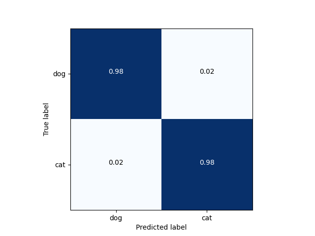

<!DOCTYPE html>
<html class="writer-html5" lang="en" >
<head>
  <meta charset="utf-8">
  
  <meta name="viewport" content="width=device-width, initial-scale=1.0">
  
  <title>Transfer learning with MobileNet for cats vs. dogs &mdash; Akida Examples  documentation</title>
  

  
  <link rel="stylesheet" href="../../_static/css/theme.css" type="text/css" />
  <link rel="stylesheet" href="../../_static/pygments.css" type="text/css" />
  <link rel="stylesheet" href="../../_static/gallery.css" type="text/css" />
  <link rel="stylesheet" href="../../_static/gallery-binder.css" type="text/css" />
  <link rel="stylesheet" href="../../_static/gallery-dataframe.css" type="text/css" />

  
  
    <link rel="shortcut icon" href="../../_static/favicon.ico"/>
  
  
  

  
  <!--[if lt IE 9]>
    <script src="../../_static/js/html5shiv.min.js"></script>
  <![endif]-->
  
    
      <script type="text/javascript" id="documentation_options" data-url_root="../../" src="../../_static/documentation_options.js"></script>
        <script src="../../_static/jquery.js"></script>
        <script src="../../_static/underscore.js"></script>
        <script src="../../_static/doctools.js"></script>
        <script src="../../_static/language_data.js"></script>
    
    <script type="text/javascript" src="../../_static/js/theme.js"></script>

    
    <link rel="index" title="Index" href="../../genindex.html" />
    <link rel="search" title="Search" href="../../search.html" />
    <link rel="next" title="YOLO/PASCAL-VOC detection tutorial" href="plot_6_voc_yolo_detection.html" />
    <link rel="prev" title="Regression tutorial" href="plot_4_regression.html" /> 
</head>

<body class="wy-body-for-nav">

   
  <div class="wy-grid-for-nav">
    
    <nav data-toggle="wy-nav-shift" class="wy-nav-side">
      <div class="wy-side-scroll">
        <div class="wy-side-nav-search"  style="background: #3f51b5" >
          

          
            <a href="../../index.html">
          

          
            
            
          
          </a>

          
            
            
              <div class="version">
                Akida 1.8.10
              </div>
            
          

          
<div role="search">
  <form id="rtd-search-form" class="wy-form" action="../../search.html" method="get">
    <input type="text" name="q" placeholder="Search docs" />
    <input type="hidden" name="check_keywords" value="yes" />
    <input type="hidden" name="area" value="default" />
  </form>
</div>

          
        </div>

        
        <div class="wy-menu wy-menu-vertical" data-spy="affix" role="navigation" aria-label="main navigation">
          
            
            
              
            
            
              <ul class="current">
<li class="toctree-l1"><a class="reference internal" href="../../index.html">Overview</a></li>
<li class="toctree-l1"><a class="reference internal" href="../../installation.html">Installation</a><ul>
<li class="toctree-l2"><a class="reference internal" href="../../installation.html#requirements">Requirements</a></li>
<li class="toctree-l2"><a class="reference internal" href="../../installation.html#quick-installation">Quick installation</a></li>
<li class="toctree-l2"><a class="reference internal" href="../../installation.html#running-examples">Running examples</a></li>
</ul>
</li>
<li class="toctree-l1"><a class="reference internal" href="../../user_guide/user_guide.html">User guide</a><ul>
<li class="toctree-l2"><a class="reference internal" href="../../user_guide/getting_started.html">Getting started</a><ul>
<li class="toctree-l3"><a class="reference internal" href="../../user_guide/getting_started.html#for-beginners">For beginners</a></li>
<li class="toctree-l3"><a class="reference internal" href="../../user_guide/getting_started.html#for-users-familiar-with-deep-learning">For users familiar with deep-learning</a></li>
</ul>
</li>
<li class="toctree-l2"><a class="reference internal" href="../../user_guide/aee.html">Akida user guide</a><ul>
<li class="toctree-l3"><a class="reference internal" href="../../user_guide/aee.html#the-akida-execution-engine">The Akida Execution Engine</a><ul>
<li class="toctree-l4"><a class="reference internal" href="../../user_guide/aee.html#id1">1. The Spiking Neural Network model</a></li>
<li class="toctree-l4"><a class="reference internal" href="../../user_guide/aee.html#id2">2. Input data format</a></li>
<li class="toctree-l4"><a class="reference internal" href="../../user_guide/aee.html#id3">3. Determine training mode</a></li>
<li class="toctree-l4"><a class="reference internal" href="../../user_guide/aee.html#id4">4. Interpreting outputs</a></li>
</ul>
</li>
<li class="toctree-l3"><a class="reference internal" href="../../user_guide/aee.html#neural-network-model">Neural Network model</a><ul>
<li class="toctree-l4"><a class="reference internal" href="../../user_guide/aee.html#specifying-the-neural-network-model">Specifying the Neural Network model</a></li>
<li class="toctree-l4"><a class="reference internal" href="../../user_guide/aee.html#saving-and-loading">Saving and loading</a></li>
<li class="toctree-l4"><a class="reference internal" href="../../user_guide/aee.html#input-layer-types">Input layer types</a></li>
<li class="toctree-l4"><a class="reference internal" href="../../user_guide/aee.html#data-processing-layer-types">Data-Processing layer types</a></li>
</ul>
</li>
<li class="toctree-l3"><a class="reference internal" href="../../user_guide/aee.html#id5">Using Akida Unsupervised Learning</a><ul>
<li class="toctree-l4"><a class="reference internal" href="../../user_guide/aee.html#learning-constraints">Learning constraints</a></li>
<li class="toctree-l4"><a class="reference internal" href="../../user_guide/aee.html#compiling-a-layer">Compiling a layer</a></li>
<li class="toctree-l4"><a class="reference internal" href="../../user_guide/aee.html#id6">Learning parameters</a></li>
</ul>
</li>
</ul>
</li>
<li class="toctree-l2"><a class="reference internal" href="../../user_guide/cnn2snn.html">CNN2SNN toolkit</a><ul>
<li class="toctree-l3"><a class="reference internal" href="../../user_guide/cnn2snn.html#overview">Overview</a><ul>
<li class="toctree-l4"><a class="reference internal" href="../../user_guide/cnn2snn.html#conversion-workflow">Conversion workflow</a></li>
<li class="toctree-l4"><a class="reference internal" href="../../user_guide/cnn2snn.html#typical-training-scenario">Typical training scenario</a></li>
<li class="toctree-l4"><a class="reference internal" href="../../user_guide/cnn2snn.html#design-compatibility-constraints">Design compatibility constraints</a></li>
<li class="toctree-l4"><a class="reference internal" href="../../user_guide/cnn2snn.html#quantization-compatibility-constraints">Quantization compatibility constraints</a></li>
<li class="toctree-l4"><a class="reference internal" href="../../user_guide/cnn2snn.html#command-line-interface">Command-line interface</a></li>
</ul>
</li>
<li class="toctree-l3"><a class="reference internal" href="../../user_guide/cnn2snn.html#layers-considerations">Layers Considerations</a><ul>
<li class="toctree-l4"><a class="reference internal" href="../../user_guide/cnn2snn.html#supported-layer-types">Supported layer types</a></li>
<li class="toctree-l4"><a class="reference internal" href="../../user_guide/cnn2snn.html#cnn2snn-quantization-aware-layers">CNN2SNN Quantization-aware layers</a></li>
<li class="toctree-l4"><a class="reference internal" href="../../user_guide/cnn2snn.html#training-only-layers">Training-Only Layers</a></li>
<li class="toctree-l4"><a class="reference internal" href="../../user_guide/cnn2snn.html#first-layers">First Layers</a></li>
<li class="toctree-l4"><a class="reference internal" href="../../user_guide/cnn2snn.html#id6">Final Layers</a></li>
</ul>
</li>
<li class="toctree-l3"><a class="reference internal" href="../../user_guide/cnn2snn.html#tips-and-tricks">Tips and Tricks</a></li>
</ul>
</li>
<li class="toctree-l2"><a class="reference internal" href="../../user_guide/akida_models.html">Akida models zoo</a><ul>
<li class="toctree-l3"><a class="reference internal" href="../../user_guide/akida_models.html#overview">Overview</a></li>
<li class="toctree-l3"><a class="reference internal" href="../../user_guide/akida_models.html#command-line-interface-for-model-creation">Command-line interface for model creation</a></li>
<li class="toctree-l3"><a class="reference internal" href="../../user_guide/akida_models.html#command-line-interface-for-model-training">Command-line interface for model training</a><ul>
<li class="toctree-l4"><a class="reference internal" href="../../user_guide/akida_models.html#cifar10-training-and-tuning">CIFAR10 training and tuning</a></li>
<li class="toctree-l4"><a class="reference internal" href="../../user_guide/akida_models.html#utk-face-training">UTK Face training</a></li>
<li class="toctree-l4"><a class="reference internal" href="../../user_guide/akida_models.html#kws-training">KWS training</a></li>
<li class="toctree-l4"><a class="reference internal" href="../../user_guide/akida_models.html#yolo-training">YOLO training</a></li>
</ul>
</li>
<li class="toctree-l3"><a class="reference internal" href="../../user_guide/akida_models.html#id1">Layer Blocks</a><ul>
<li class="toctree-l4"><a class="reference internal" href="../../user_guide/akida_models.html#conv-block"><code class="docutils literal notranslate"><span class="pre">conv_block</span></code></a></li>
<li class="toctree-l4"><a class="reference internal" href="../../user_guide/akida_models.html#dense-block"><code class="docutils literal notranslate"><span class="pre">dense_block</span></code></a></li>
<li class="toctree-l4"><a class="reference internal" href="../../user_guide/akida_models.html#separable-conv-block"><code class="docutils literal notranslate"><span class="pre">separable_conv_block</span></code></a></li>
</ul>
</li>
</ul>
</li>
<li class="toctree-l2"><a class="reference internal" href="../../user_guide/hw_constraints.html">Hardware constraints</a><ul>
<li class="toctree-l3"><a class="reference internal" href="../../user_guide/hw_constraints.html#akida-nsoc-pre-production">Akida NSoC (Pre-production)</a><ul>
<li class="toctree-l4"><a class="reference internal" href="../../user_guide/hw_constraints.html#inputconvolutional">InputConvolutional</a></li>
<li class="toctree-l4"><a class="reference internal" href="../../user_guide/hw_constraints.html#convolutional">Convolutional</a></li>
<li class="toctree-l4"><a class="reference internal" href="../../user_guide/hw_constraints.html#separableconvolutional">SeparableConvolutional</a></li>
<li class="toctree-l4"><a class="reference internal" href="../../user_guide/hw_constraints.html#fullyconnected">FullyConnected</a></li>
</ul>
</li>
<li class="toctree-l3"><a class="reference internal" href="../../user_guide/hw_constraints.html#akida-nsoc-production">Akida NSoC (Production)</a><ul>
<li class="toctree-l4"><a class="reference internal" href="../../user_guide/hw_constraints.html#id1">InputConvolutional</a></li>
<li class="toctree-l4"><a class="reference internal" href="../../user_guide/hw_constraints.html#id2">Convolutional</a></li>
<li class="toctree-l4"><a class="reference internal" href="../../user_guide/hw_constraints.html#id3">SeparableConvolutional</a></li>
<li class="toctree-l4"><a class="reference internal" href="../../user_guide/hw_constraints.html#id4">FullyConnected</a></li>
</ul>
</li>
</ul>
</li>
<li class="toctree-l2"><a class="reference internal" href="../../user_guide/compatibility.html">Akida versions compatibility</a><ul>
<li class="toctree-l3"><a class="reference internal" href="../../user_guide/compatibility.html#upgrading-models-with-legacy-quantizers">Upgrading models with legacy quantizers</a></li>
</ul>
</li>
</ul>
</li>
<li class="toctree-l1"><a class="reference internal" href="../../api_reference/api_reference.html">API reference</a><ul>
<li class="toctree-l2"><a class="reference internal" href="../../api_reference/aee_apis.html">Akida Execution Engine</a><ul>
<li class="toctree-l3"><a class="reference internal" href="../../api_reference/aee_apis.html#model">Model</a></li>
<li class="toctree-l3"><a class="reference internal" href="../../api_reference/aee_apis.html#layer">Layer</a></li>
<li class="toctree-l3"><a class="reference internal" href="../../api_reference/aee_apis.html#layerstatistics">LayerStatistics</a></li>
<li class="toctree-l3"><a class="reference internal" href="../../api_reference/aee_apis.html#observer">Observer</a></li>
<li class="toctree-l3"><a class="reference internal" href="../../api_reference/aee_apis.html#inputdata">InputData</a></li>
<li class="toctree-l3"><a class="reference internal" href="../../api_reference/aee_apis.html#inputconvolutional">InputConvolutional</a></li>
<li class="toctree-l3"><a class="reference internal" href="../../api_reference/aee_apis.html#fullyconnected">FullyConnected</a></li>
<li class="toctree-l3"><a class="reference internal" href="../../api_reference/aee_apis.html#convolutional">Convolutional</a></li>
<li class="toctree-l3"><a class="reference internal" href="../../api_reference/aee_apis.html#separableconvolutional">SeparableConvolutional</a></li>
<li class="toctree-l3"><a class="reference internal" href="../../api_reference/aee_apis.html#dense">Dense</a></li>
<li class="toctree-l3"><a class="reference internal" href="../../api_reference/aee_apis.html#sparse">Sparse</a></li>
<li class="toctree-l3"><a class="reference internal" href="../../api_reference/aee_apis.html#coords-to-sparse">coords_to_sparse</a></li>
<li class="toctree-l3"><a class="reference internal" href="../../api_reference/aee_apis.html#dense-to-sparse">dense_to_sparse</a></li>
<li class="toctree-l3"><a class="reference internal" href="../../api_reference/aee_apis.html#packetize">packetize</a></li>
<li class="toctree-l3"><a class="reference internal" href="../../api_reference/aee_apis.html#backend">Backend</a></li>
<li class="toctree-l3"><a class="reference internal" href="../../api_reference/aee_apis.html#convolutionmode">ConvolutionMode</a></li>
<li class="toctree-l3"><a class="reference internal" href="../../api_reference/aee_apis.html#poolingtype">PoolingType</a></li>
<li class="toctree-l3"><a class="reference internal" href="../../api_reference/aee_apis.html#learningtype">LearningType</a></li>
<li class="toctree-l3"><a class="reference internal" href="../../api_reference/aee_apis.html#compatibility">Compatibility</a></li>
</ul>
</li>
<li class="toctree-l2"><a class="reference internal" href="../../api_reference/cnn2snn_apis.html">CNN2SNN</a><ul>
<li class="toctree-l3"><a class="reference internal" href="../../api_reference/cnn2snn_apis.html#tool-functions">Tool functions</a><ul>
<li class="toctree-l4"><a class="reference internal" href="../../api_reference/cnn2snn_apis.html#quantize">quantize</a></li>
<li class="toctree-l4"><a class="reference internal" href="../../api_reference/cnn2snn_apis.html#quantize-layer">quantize_layer</a></li>
<li class="toctree-l4"><a class="reference internal" href="../../api_reference/cnn2snn_apis.html#convert">convert</a></li>
<li class="toctree-l4"><a class="reference internal" href="../../api_reference/cnn2snn_apis.html#check-model-compatibility">check_model_compatibility</a></li>
<li class="toctree-l4"><a class="reference internal" href="../../api_reference/cnn2snn_apis.html#load-quantized-model">load_quantized_model</a></li>
<li class="toctree-l4"><a class="reference internal" href="../../api_reference/cnn2snn_apis.html#load-partial-weights">load_partial_weights</a></li>
</ul>
</li>
<li class="toctree-l3"><a class="reference internal" href="../../api_reference/cnn2snn_apis.html#quantizers">Quantizers</a><ul>
<li class="toctree-l4"><a class="reference internal" href="../../api_reference/cnn2snn_apis.html#weightquantizer">WeightQuantizer</a></li>
<li class="toctree-l4"><a class="reference internal" href="../../api_reference/cnn2snn_apis.html#linearweightquantizer">LinearWeightQuantizer</a></li>
<li class="toctree-l4"><a class="reference internal" href="../../api_reference/cnn2snn_apis.html#stdweightquantizer">StdWeightQuantizer</a></li>
<li class="toctree-l4"><a class="reference internal" href="../../api_reference/cnn2snn_apis.html#trainablestdweightquantizer">TrainableStdWeightQuantizer</a></li>
<li class="toctree-l4"><a class="reference internal" href="../../api_reference/cnn2snn_apis.html#maxquantizer">MaxQuantizer</a></li>
<li class="toctree-l4"><a class="reference internal" href="../../api_reference/cnn2snn_apis.html#maxperaxisquantizer">MaxPerAxisQuantizer</a></li>
<li class="toctree-l4"><a class="reference internal" href="../../api_reference/cnn2snn_apis.html#weightfloat">WeightFloat</a></li>
</ul>
</li>
<li class="toctree-l3"><a class="reference internal" href="../../api_reference/cnn2snn_apis.html#quantized-layers">Quantized layers</a><ul>
<li class="toctree-l4"><a class="reference internal" href="../../api_reference/cnn2snn_apis.html#quantizedconv2d">QuantizedConv2D</a></li>
<li class="toctree-l4"><a class="reference internal" href="../../api_reference/cnn2snn_apis.html#quantizeddepthwiseconv2d">QuantizedDepthwiseConv2D</a></li>
<li class="toctree-l4"><a class="reference internal" href="../../api_reference/cnn2snn_apis.html#quantizeddense">QuantizedDense</a></li>
<li class="toctree-l4"><a class="reference internal" href="../../api_reference/cnn2snn_apis.html#quantizedseparableconv2d">QuantizedSeparableConv2D</a></li>
<li class="toctree-l4"><a class="reference internal" href="../../api_reference/cnn2snn_apis.html#quantizedactivation">QuantizedActivation</a></li>
<li class="toctree-l4"><a class="reference internal" href="../../api_reference/cnn2snn_apis.html#activationdiscreterelu">ActivationDiscreteRelu</a></li>
<li class="toctree-l4"><a class="reference internal" href="../../api_reference/cnn2snn_apis.html#quantizedrelu">QuantizedReLU</a></li>
</ul>
</li>
</ul>
</li>
<li class="toctree-l2"><a class="reference internal" href="../../api_reference/akida_models_apis.html">Akida models</a><ul>
<li class="toctree-l3"><a class="reference internal" href="../../api_reference/akida_models_apis.html#layer-blocks">Layer blocks</a><ul>
<li class="toctree-l4"><a class="reference internal" href="../../api_reference/akida_models_apis.html#conv-block">conv_block</a></li>
<li class="toctree-l4"><a class="reference internal" href="../../api_reference/akida_models_apis.html#separable-conv-block">separable_conv_block</a></li>
<li class="toctree-l4"><a class="reference internal" href="../../api_reference/akida_models_apis.html#dense-block">dense_block</a></li>
</ul>
</li>
<li class="toctree-l3"><a class="reference internal" href="../../api_reference/akida_models_apis.html#model-zoo">Model zoo</a><ul>
<li class="toctree-l4"><a class="reference internal" href="../../api_reference/akida_models_apis.html#mobilenet">Mobilenet</a></li>
<li class="toctree-l4"><a class="reference internal" href="../../api_reference/akida_models_apis.html#ds-cnn">DS-CNN</a></li>
<li class="toctree-l4"><a class="reference internal" href="../../api_reference/akida_models_apis.html#vgg">VGG</a></li>
<li class="toctree-l4"><a class="reference internal" href="../../api_reference/akida_models_apis.html#yolo">YOLO</a></li>
</ul>
</li>
</ul>
</li>
</ul>
</li>
<li class="toctree-l1 current"><a class="reference internal" href="../index.html">Examples</a><ul class="current">
<li class="toctree-l2 current"><a class="reference internal" href="../index.html#general-examples">General examples</a><ul class="current">
<li class="toctree-l3"><a class="reference internal" href="plot_0_gxnor_mnist.html">GXNOR/MNIST inference</a><ul>
<li class="toctree-l4"><a class="reference internal" href="plot_0_gxnor_mnist.html#dataset-preparation">1. Dataset preparation</a></li>
<li class="toctree-l4"><a class="reference internal" href="plot_0_gxnor_mnist.html#load-the-pre-trained-akida-model">2. Load the pre-trained Akida model</a></li>
<li class="toctree-l4"><a class="reference internal" href="plot_0_gxnor_mnist.html#show-predictions-for-a-single-image">3. Show predictions for a single image</a></li>
<li class="toctree-l4"><a class="reference internal" href="plot_0_gxnor_mnist.html#check-performance">4. Check performance</a></li>
</ul>
</li>
<li class="toctree-l3"><a class="reference internal" href="plot_1_ds_cnn_cifar10.html">DS-CNN CIFAR10 inference</a><ul>
<li class="toctree-l4"><a class="reference internal" href="plot_1_ds_cnn_cifar10.html#dataset-preparation">1. Dataset preparation</a></li>
<li class="toctree-l4"><a class="reference internal" href="plot_1_ds_cnn_cifar10.html#create-a-keras-ds-cnn-model">2. Create a Keras DS-CNN model</a></li>
<li class="toctree-l4"><a class="reference internal" href="plot_1_ds_cnn_cifar10.html#quantized-model">3. Quantized model</a></li>
<li class="toctree-l4"><a class="reference internal" href="plot_1_ds_cnn_cifar10.html#pretrained-quantized-model">4. Pretrained quantized model</a></li>
<li class="toctree-l4"><a class="reference internal" href="plot_1_ds_cnn_cifar10.html#conversion-to-akida">5. Conversion to Akida</a></li>
</ul>
</li>
<li class="toctree-l3"><a class="reference internal" href="plot_2_mobilenet_imagenet.html">MobileNet/ImageNet inference</a><ul>
<li class="toctree-l4"><a class="reference internal" href="plot_2_mobilenet_imagenet.html#dataset-preparation">1. Dataset preparation</a></li>
<li class="toctree-l4"><a class="reference internal" href="plot_2_mobilenet_imagenet.html#create-a-keras-mobilenet-model">2. Create a Keras MobileNet model</a></li>
<li class="toctree-l4"><a class="reference internal" href="plot_2_mobilenet_imagenet.html#quantized-model">3. Quantized model</a></li>
<li class="toctree-l4"><a class="reference internal" href="plot_2_mobilenet_imagenet.html#pretrained-quantized-model">4. Pretrained quantized model</a></li>
<li class="toctree-l4"><a class="reference internal" href="plot_2_mobilenet_imagenet.html#conversion-to-akida">5. Conversion to Akida</a></li>
</ul>
</li>
<li class="toctree-l3"><a class="reference internal" href="plot_3_ds_cnn_kws.html">DS-CNN/KWS inference</a><ul>
<li class="toctree-l4"><a class="reference internal" href="plot_3_ds_cnn_kws.html#load-the-preprocessed-dataset">1. Load the preprocessed dataset</a></li>
<li class="toctree-l4"><a class="reference internal" href="plot_3_ds_cnn_kws.html#load-a-pre-trained-native-keras-model">2. Load a pre-trained native Keras model</a></li>
<li class="toctree-l4"><a class="reference internal" href="plot_3_ds_cnn_kws.html#load-a-pre-trained-quantized-keras-model-satisfying-akida-nsoc-requirements">3. Load a pre-trained quantized Keras model satisfying Akida NSoC requirements</a></li>
<li class="toctree-l4"><a class="reference internal" href="plot_3_ds_cnn_kws.html#conversion-to-akida">4. Conversion to Akida</a></li>
</ul>
</li>
<li class="toctree-l3"><a class="reference internal" href="plot_4_regression.html">Regression tutorial</a><ul>
<li class="toctree-l4"><a class="reference internal" href="plot_4_regression.html#load-the-dataset">1. Load the dataset</a></li>
<li class="toctree-l4"><a class="reference internal" href="plot_4_regression.html#load-a-pre-trained-native-keras-model">2. Load a pre-trained native Keras model</a></li>
<li class="toctree-l4"><a class="reference internal" href="plot_4_regression.html#load-a-pre-trained-quantized-keras-model-satisfying-akida-nsoc-requirements">3. Load a pre-trained quantized Keras model satisfying Akida NSoC requirements</a></li>
<li class="toctree-l4"><a class="reference internal" href="plot_4_regression.html#conversion-to-akida">4. Conversion to Akida</a></li>
<li class="toctree-l4"><a class="reference internal" href="plot_4_regression.html#estimate-age-on-a-single-image">5. Estimate age on a single image</a></li>
</ul>
</li>
<li class="toctree-l3 current"><a class="current reference internal" href="#">Transfer learning with MobileNet for cats vs. dogs</a><ul>
<li class="toctree-l4"><a class="reference internal" href="#transfer-learning-process">Transfer learning process</a></li>
<li class="toctree-l4"><a class="reference internal" href="#load-and-preprocess-data">1. Load and preprocess data</a></li>
<li class="toctree-l4"><a class="reference internal" href="#modify-a-pre-trained-base-keras-model">2. Modify a pre-trained base Keras model</a></li>
<li class="toctree-l4"><a class="reference internal" href="#train-the-transferred-model-for-the-new-task">3. Train the transferred model for the new task</a></li>
<li class="toctree-l4"><a class="reference internal" href="#quantize-the-top-layer">4 Quantize the top layer</a></li>
<li class="toctree-l4"><a class="reference internal" href="#convert-to-akida">5. Convert to Akida</a></li>
<li class="toctree-l4"><a class="reference internal" href="#plot-confusion-matrix">6. Plot confusion matrix</a></li>
</ul>
</li>
<li class="toctree-l3"><a class="reference internal" href="plot_6_voc_yolo_detection.html">YOLO/PASCAL-VOC detection tutorial</a><ul>
<li class="toctree-l4"><a class="reference internal" href="plot_6_voc_yolo_detection.html#introduction">1. Introduction</a></li>
<li class="toctree-l4"><a class="reference internal" href="plot_6_voc_yolo_detection.html#preprocessing-tools">2. Preprocessing tools</a></li>
<li class="toctree-l4"><a class="reference internal" href="plot_6_voc_yolo_detection.html#model-architecture">3. Model architecture</a></li>
<li class="toctree-l4"><a class="reference internal" href="plot_6_voc_yolo_detection.html#training">4. Training</a></li>
<li class="toctree-l4"><a class="reference internal" href="plot_6_voc_yolo_detection.html#performance">5. Performance</a></li>
<li class="toctree-l4"><a class="reference internal" href="plot_6_voc_yolo_detection.html#conversion-to-akida">6. Conversion to Akida</a></li>
</ul>
</li>
</ul>
</li>
<li class="toctree-l2"><a class="reference internal" href="../index.html#cnn2snn-tutorials">CNN2SNN tutorials</a><ul>
<li class="toctree-l3"><a class="reference internal" href="../cnn2snn/plot_0_cnn_flow.html">CNN conversion flow tutorial</a><ul>
<li class="toctree-l4"><a class="reference internal" href="../cnn2snn/plot_0_cnn_flow.html#load-and-reshape-mnist-dataset">1. Load and reshape MNIST dataset</a></li>
<li class="toctree-l4"><a class="reference internal" href="../cnn2snn/plot_0_cnn_flow.html#model-definition">2. Model definition</a></li>
<li class="toctree-l4"><a class="reference internal" href="../cnn2snn/plot_0_cnn_flow.html#model-quantization">4. Model quantization</a></li>
<li class="toctree-l4"><a class="reference internal" href="../cnn2snn/plot_0_cnn_flow.html#model-fine-tuning-quantization-aware-training">5. Model fine tuning (quantization-aware training)</a></li>
<li class="toctree-l4"><a class="reference internal" href="../cnn2snn/plot_0_cnn_flow.html#model-conversion">6. Model conversion</a></li>
</ul>
</li>
<li class="toctree-l3"><a class="reference internal" href="../cnn2snn/plot_1_advanced_cnn2snn.html">Advanced CNN2SNN tutorial</a><ul>
<li class="toctree-l4"><a class="reference internal" href="../cnn2snn/plot_1_advanced_cnn2snn.html#design-a-cnn2snn-quantized-model">1. Design a CNN2SNN quantized model</a></li>
<li class="toctree-l4"><a class="reference internal" href="../cnn2snn/plot_1_advanced_cnn2snn.html#weight-quantizer-details">2. Weight Quantizer Details</a></li>
<li class="toctree-l4"><a class="reference internal" href="../cnn2snn/plot_1_advanced_cnn2snn.html#quantized-activation-layer-details">3. Quantized Activation Layer Details</a></li>
</ul>
</li>
</ul>
</li>
<li class="toctree-l2"><a class="reference internal" href="../index.html#edge-examples">Edge examples</a><ul>
<li class="toctree-l3"><a class="reference internal" href="../edge/plot_0_edge_learning_vision.html">Akida vision edge learning</a><ul>
<li class="toctree-l4"><a class="reference internal" href="../edge/plot_0_edge_learning_vision.html#dataset-preparation">1. Dataset preparation</a></li>
<li class="toctree-l4"><a class="reference internal" href="../edge/plot_0_edge_learning_vision.html#prepare-akida-model-for-learning">2. Prepare Akida model for learning</a></li>
<li class="toctree-l4"><a class="reference internal" href="../edge/plot_0_edge_learning_vision.html#edge-learning-with-akida">3. Edge learning with Akida</a></li>
</ul>
</li>
<li class="toctree-l3"><a class="reference internal" href="../edge/plot_1_edge_learning_kws.html">Akida edge learning for keyword spotting</a><ul>
<li class="toctree-l4"><a class="reference internal" href="../edge/plot_1_edge_learning_kws.html#edge-learning-process">1. Edge learning process</a></li>
<li class="toctree-l4"><a class="reference internal" href="../edge/plot_1_edge_learning_kws.html#dataset-preparation">2. Dataset preparation</a></li>
<li class="toctree-l4"><a class="reference internal" href="../edge/plot_1_edge_learning_kws.html#prepare-akida-model-for-learning">3. Prepare Akida model for learning</a></li>
<li class="toctree-l4"><a class="reference internal" href="../edge/plot_1_edge_learning_kws.html#learn-with-akida-using-the-training-set">4. Learn with Akida using the training set</a></li>
<li class="toctree-l4"><a class="reference internal" href="../edge/plot_1_edge_learning_kws.html#edge-learning">4. Edge learning</a></li>
</ul>
</li>
<li class="toctree-l3"><a class="reference internal" href="../edge/plot_2_edge_learning_parameters.html">Tips to set Akida learning parameters</a><ul>
<li class="toctree-l4"><a class="reference internal" href="../edge/plot_2_edge_learning_parameters.html#akida-learning-parameters">1. Akida learning parameters</a></li>
<li class="toctree-l4"><a class="reference internal" href="../edge/plot_2_edge_learning_parameters.html#create-akida-model">2. Create Akida model</a></li>
<li class="toctree-l4"><a class="reference internal" href="../edge/plot_2_edge_learning_parameters.html#estimate-the-required-number-of-weights-of-the-trainable-layer">3. Estimate the required number of weights of the trainable layer</a></li>
<li class="toctree-l4"><a class="reference internal" href="../edge/plot_2_edge_learning_parameters.html#estimate-the-number-of-neurons-per-class">4. Estimate the number of neurons per class</a></li>
</ul>
</li>
</ul>
</li>
</ul>
</li>
<li class="toctree-l1"><a class="reference external" href="https://github.com/Brainchip-Inc/akida_examples/releases">Changelog</a></li>
<li class="toctree-l1"><a class="reference external" href="https://support.brainchip.com/portal/home">Support</a></li>
<li class="toctree-l1"><a class="reference internal" href="../../license.html">License</a></li>
</ul>

            
          
        </div>
        
      </div>
    </nav>

    <section data-toggle="wy-nav-shift" class="wy-nav-content-wrap">

      
      <nav class="wy-nav-top" aria-label="top navigation">
        
          <i data-toggle="wy-nav-top" class="fa fa-bars"></i>
          <a href="../../index.html">Akida Examples</a>
        
      </nav>


      <div class="wy-nav-content">
        
        <div class="rst-content">
        
          


<div role="navigation" aria-label="breadcrumbs navigation">

  <ul class="wy-breadcrumbs">
    
      <li><a href="../../index.html" class="icon icon-home"></a> &raquo;</li>
        
          <li><a href="../index.html">Akida examples</a> &raquo;</li>
        
      <li>Transfer learning with MobileNet for cats vs. dogs</li>
    
    
      <li class="wy-breadcrumbs-aside">
        
            
        
      </li>
    
  </ul>

  
  <hr/>
</div>
          <div role="main" class="document" itemscope="itemscope" itemtype="http://schema.org/Article">
           <div itemprop="articleBody">
            
  <div class="sphx-glr-download-link-note admonition note">
<p class="admonition-title">Note</p>
<p>Click <a class="reference internal" href="#sphx-glr-download-examples-general-plot-5-transfer-learning-py"><span class="std std-ref">here</span></a>     to download the full example code</p>
</div>
<div class="sphx-glr-example-title section" id="transfer-learning-with-mobilenet-for-cats-vs-dogs">
<span id="sphx-glr-examples-general-plot-5-transfer-learning-py"></span><h1>Transfer learning with MobileNet for cats vs. dogs<a class="headerlink" href="#transfer-learning-with-mobilenet-for-cats-vs-dogs" title="Permalink to this headline">¶</a></h1>
<p>This tutorial presents a demonstration of how transfer learning is applied
with our quantized models to get an Akida model.</p>
<p>The transfer learning example is derived from the <a class="reference external" href="https://www.tensorflow.org/tutorials/images/transfer_learning">Tensorflow
tutorial</a>:</p>
<blockquote>
<div><ul class="simple">
<li><p>Our base model is an Akida-compatible version of <strong>MobileNet v1</strong>,
trained on ImageNet.</p></li>
<li><p>The new dataset for transfer learning is <strong>cats vs. dogs</strong>
(<a class="reference external" href="https://www.tensorflow.org/datasets/catalog/cats_vs_dogs">link</a>).</p></li>
<li><p>We use transfer learning to customize the model to the new task of
classifying cats and dogs.</p></li>
</ul>
</div></blockquote>
<div class="admonition note">
<p class="admonition-title">Note</p>
<p>This tutorial only shows the inference of the trained Keras
model and its conversion to an Akida network. A textual explanation
of the training is given below.</p>
</div>
<div class="section" id="transfer-learning-process">
<h2>Transfer learning process<a class="headerlink" href="#transfer-learning-process" title="Permalink to this headline">¶</a></h2>
<div class="figure align-center">
<a class="reference external image-reference" href="https://s2.qwant.com/thumbr/0x380/7/0/7b7386531ea24ab1294fdf9b8698b008a51e38a3c57e81427fbef626ff226c/1*6ACbDsBMeDZcLg9W8CFT_Q.png?u=https%3A%2F%2Fcdn-images-1.medium.com%2Fmax%2F1600%2F1%2A6ACbDsBMeDZcLg9W8CFT_Q.png&amp;q=0&amp;b=1&amp;p=0&amp;a=1"></a>
</div>
<p>Transfer learning allows to classify on a specific task by using a
pre-trained base model. For an introduction to transfer learning, please
refer to the <a class="reference external" href="https://www.tensorflow.org/tutorials/images/transfer_learning">Tensorflow transfer learning
tutorial</a>
before exploring this tutorial. Here, we focus on how to quantize the
Keras model in order to convert it to an Akida one.</p>
<p>The model is composed of:</p>
<blockquote>
<div><ul class="simple">
<li><p>a base quantized MobileNet model used to extract image features</p></li>
<li><p>a top layer to classify cats and dogs</p></li>
<li><p>a sigmoid activation function to interpret model outputs as a probability</p></li>
</ul>
</div></blockquote>
<p><strong>Base model</strong></p>
<p>The base model is a quantized version of MobileNet v1. This
model was trained and quantized using the ImageNet dataset. Please refer
to the corresponding <a class="reference external" href="plot_2_mobilenet_imagenet.html">example</a> for
more information. The layers have 4-bit weights (except for the first
layer having 8-bit weights) and the activations are quantized to 4 bits.
This base model ends with a classification layer for 1000 classes. To
classify cats and dogs, the feature extractor is preserved but the
classification layer must be removed to be replaced by a new top layer
focusing on the new task.</p>
<p>In our transfer learning process, the base model is frozen, i.e., the
weights are not updated during training. Pre-trained weights for the
frozen quantized model are provided on our
<a class="reference external" href="http://data.brainchip.com/models/mobilenet/">data server</a>.</p>
<p><strong>Top layer</strong></p>
<p>While a fully-connected top layer is added in the Tensorflow tutorial, we
decided to use a separable convolutional layer with one output neuron for the
top layer of our model. The reason is that the separable convolutional layer
is the only Akida layer supporting 4-bit weights (see <a class="reference external" href="../../user_guide/hw_constraints.html">hardware compatibility</a>).</p>
<p><strong>Training process</strong></p>
<p>The transfer learning process for quantized models can be handled in different
ways:</p>
<blockquote>
<div><ol class="arabic simple">
<li><p><strong>From a quantized base model</strong>, the new transferred model is composed
of a frozen base model and a float top layer. The top layer is trained.
Then, the top layer is quantized and fine-tuned. If necessary, the base
model can be unfrozen to be slightly trained to improve accuracy.</p></li>
<li><p><strong>From a float base model</strong>, the new transferred model is also composed
of a frozen base model (with float weights/activations) and a float top
layer. The top layer is trained. Then the full model is quantized,
unfrozen and fine-tuned. This option requires longer training
operations since we don’t take advantage of an already quantized base
model. Option 2 can be used alternatively if option 1 doesn’t give
suitable performance.</p></li>
</ol>
</div></blockquote>
<p>In this example, option 1 is chosen. The training steps are described below.</p>
</div>
<div class="section" id="load-and-preprocess-data">
<h2>1. Load and preprocess data<a class="headerlink" href="#load-and-preprocess-data" title="Permalink to this headline">¶</a></h2>
<p>In this section, we will load and preprocess the ‘cats_vs_dogs’ dataset
to match the required model’s inputs.</p>
<div class="section" id="a-load-and-split-data">
<h3>1.A - Load and split data<a class="headerlink" href="#a-load-and-split-data" title="Permalink to this headline">¶</a></h3>
<p>The <code class="docutils literal notranslate"><span class="pre">cats_vs_dogs</span></code>
<a class="reference external" href="https://www.tensorflow.org/datasets/catalog/cats_vs_dogs">dataset</a>
is loaded and split into train, validation and test sets. The train and
validation sets were used for the transfer learning process. Here only
the test set is used. We use here <code class="docutils literal notranslate"><span class="pre">tf.Dataset</span></code> objects to load and
preprocess batches of data (one can look at the TensorFlow guide
<a class="reference external" href="https://www.tensorflow.org/guide/data">here</a> for more information).</p>
<div class="admonition note">
<p class="admonition-title">Note</p>
<p>The <code class="docutils literal notranslate"><span class="pre">cats_vs_dogs</span></code> dataset version used here is 4.0.0.</p>
</div>
<div class="highlight-default notranslate"><div class="highlight"><pre><span></span><span class="kn">import</span> <span class="nn">tensorflow_datasets</span> <span class="k">as</span> <span class="nn">tfds</span>

<span class="n">splits</span> <span class="o">=</span> <span class="p">[</span><span class="s1">&#39;train[:80%]&#39;</span><span class="p">,</span> <span class="s1">&#39;train[80%:90%]&#39;</span><span class="p">,</span> <span class="s1">&#39;train[90%:]&#39;</span><span class="p">]</span>

<span class="n">tfds</span><span class="o">.</span><span class="n">disable_progress_bar</span><span class="p">()</span>
<span class="p">(</span><span class="n">raw_train</span><span class="p">,</span> <span class="n">raw_validation</span><span class="p">,</span>
 <span class="n">raw_test</span><span class="p">),</span> <span class="n">metadata</span> <span class="o">=</span> <span class="n">tfds</span><span class="o">.</span><span class="n">load</span><span class="p">(</span><span class="s1">&#39;cats_vs_dogs:4.0.0&#39;</span><span class="p">,</span>
                                 <span class="n">split</span><span class="o">=</span><span class="n">splits</span><span class="p">,</span>
                                 <span class="n">with_info</span><span class="o">=</span><span class="kc">True</span><span class="p">,</span>
                                 <span class="n">as_supervised</span><span class="o">=</span><span class="kc">True</span><span class="p">)</span>
</pre></div>
</div>
<p class="sphx-glr-script-out">Out:</p>
<div class="sphx-glr-script-out highlight-none notranslate"><div class="highlight"><pre><span></span>Downloading and preparing dataset cats_vs_dogs/4.0.0 (download: 786.68 MiB, generated: Unknown size, total: 786.68 MiB) to /root/tensorflow_datasets/cats_vs_dogs/4.0.0...
WARNING:absl:1738 images were corrupted and were skipped
Shuffling and writing examples to /root/tensorflow_datasets/cats_vs_dogs/4.0.0.incomplete87OU76/cats_vs_dogs-train.tfrecord
Dataset cats_vs_dogs downloaded and prepared to /root/tensorflow_datasets/cats_vs_dogs/4.0.0. Subsequent calls will reuse this data.
</pre></div>
</div>
</div>
<div class="section" id="b-preprocess-the-test-set">
<h3>1.B - Preprocess the test set<a class="headerlink" href="#b-preprocess-the-test-set" title="Permalink to this headline">¶</a></h3>
<p>We must apply the same preprocessing as for training: rescaling and
resizing. Since Akida models directly accept integer-valued images, we
also define a preprocessing function for Akida:</p>
<blockquote>
<div><ul class="simple">
<li><p>for Keras: images are rescaled between 0 and 1, and resized to 160x160</p></li>
<li><p>for Akida: images are only resized to 160x160 (uint8 values).</p></li>
</ul>
</div></blockquote>
<p>Keras and Akida models require 4-dimensional (N,H,W,C) arrays as inputs.
We must then create batches of images to feed the model. For inference,
the batch size is not relevant; you can set it such that the batch of
images can be loaded in memory depending on your CPU/GPU.</p>
<div class="highlight-default notranslate"><div class="highlight"><pre><span></span><span class="kn">import</span> <span class="nn">tensorflow</span> <span class="k">as</span> <span class="nn">tf</span>

<span class="n">IMG_SIZE</span> <span class="o">=</span> <span class="mi">160</span>
<span class="n">input_scaling</span> <span class="o">=</span> <span class="p">(</span><span class="mf">127.5</span><span class="p">,</span> <span class="mf">127.5</span><span class="p">)</span>


<span class="k">def</span> <span class="nf">format_example_keras</span><span class="p">(</span><span class="n">image</span><span class="p">,</span> <span class="n">label</span><span class="p">):</span>
    <span class="n">image</span> <span class="o">=</span> <span class="n">tf</span><span class="o">.</span><span class="n">cast</span><span class="p">(</span><span class="n">image</span><span class="p">,</span> <span class="n">tf</span><span class="o">.</span><span class="n">float32</span><span class="p">)</span>
    <span class="n">image</span> <span class="o">=</span> <span class="p">(</span><span class="n">image</span> <span class="o">-</span> <span class="n">input_scaling</span><span class="p">[</span><span class="mi">1</span><span class="p">])</span> <span class="o">/</span> <span class="n">input_scaling</span><span class="p">[</span><span class="mi">0</span><span class="p">]</span>
    <span class="n">image</span> <span class="o">=</span> <span class="n">tf</span><span class="o">.</span><span class="n">image</span><span class="o">.</span><span class="n">resize</span><span class="p">(</span><span class="n">image</span><span class="p">,</span> <span class="p">(</span><span class="n">IMG_SIZE</span><span class="p">,</span> <span class="n">IMG_SIZE</span><span class="p">))</span>
    <span class="k">return</span> <span class="n">image</span><span class="p">,</span> <span class="n">label</span>


<span class="k">def</span> <span class="nf">format_example_akida</span><span class="p">(</span><span class="n">image</span><span class="p">,</span> <span class="n">label</span><span class="p">):</span>
    <span class="n">image</span> <span class="o">=</span> <span class="n">tf</span><span class="o">.</span><span class="n">image</span><span class="o">.</span><span class="n">resize</span><span class="p">(</span><span class="n">image</span><span class="p">,</span> <span class="p">(</span><span class="n">IMG_SIZE</span><span class="p">,</span> <span class="n">IMG_SIZE</span><span class="p">))</span>
    <span class="n">image</span> <span class="o">=</span> <span class="n">tf</span><span class="o">.</span><span class="n">cast</span><span class="p">(</span><span class="n">image</span><span class="p">,</span> <span class="n">tf</span><span class="o">.</span><span class="n">uint8</span><span class="p">)</span>
    <span class="k">return</span> <span class="n">image</span><span class="p">,</span> <span class="n">label</span>
</pre></div>
</div>
<div class="highlight-default notranslate"><div class="highlight"><pre><span></span><span class="n">BATCH_SIZE</span> <span class="o">=</span> <span class="mi">32</span>
<span class="n">test_batches_keras</span> <span class="o">=</span> <span class="n">raw_test</span><span class="o">.</span><span class="n">map</span><span class="p">(</span><span class="n">format_example_keras</span><span class="p">)</span><span class="o">.</span><span class="n">batch</span><span class="p">(</span><span class="n">BATCH_SIZE</span><span class="p">)</span>
<span class="n">test_batches_akida</span> <span class="o">=</span> <span class="n">raw_test</span><span class="o">.</span><span class="n">map</span><span class="p">(</span><span class="n">format_example_akida</span><span class="p">)</span><span class="o">.</span><span class="n">batch</span><span class="p">(</span><span class="n">BATCH_SIZE</span><span class="p">)</span>
</pre></div>
</div>
</div>
<div class="section" id="c-get-labels">
<h3>1.C - Get labels<a class="headerlink" href="#c-get-labels" title="Permalink to this headline">¶</a></h3>
<p>Labels are contained in the test set as ‘0’ for cats and ‘1’ for dogs.
We read through the batches to extract the labels.</p>
<div class="highlight-default notranslate"><div class="highlight"><pre><span></span><span class="kn">import</span> <span class="nn">numpy</span> <span class="k">as</span> <span class="nn">np</span>

<span class="n">labels</span> <span class="o">=</span> <span class="n">np</span><span class="o">.</span><span class="n">array</span><span class="p">([])</span>
<span class="k">for</span> <span class="n">_</span><span class="p">,</span> <span class="n">label_batch</span> <span class="ow">in</span> <span class="n">test_batches_keras</span><span class="p">:</span>
    <span class="n">labels</span> <span class="o">=</span> <span class="n">np</span><span class="o">.</span><span class="n">concatenate</span><span class="p">((</span><span class="n">labels</span><span class="p">,</span> <span class="n">label_batch</span><span class="p">))</span>

<span class="n">num_images</span> <span class="o">=</span> <span class="n">labels</span><span class="o">.</span><span class="n">shape</span><span class="p">[</span><span class="mi">0</span><span class="p">]</span>

<span class="nb">print</span><span class="p">(</span><span class="sa">f</span><span class="s2">&quot;Test set composed of </span><span class="si">{</span><span class="n">num_images</span><span class="si">}</span><span class="s2"> images: &quot;</span>
      <span class="sa">f</span><span class="s2">&quot;</span><span class="si">{</span><span class="n">np</span><span class="o">.</span><span class="n">count_nonzero</span><span class="p">(</span><span class="n">labels</span><span class="o">==</span><span class="mi">0</span><span class="p">)</span><span class="si">}</span><span class="s2"> cats and &quot;</span>
      <span class="sa">f</span><span class="s2">&quot;</span><span class="si">{</span><span class="n">np</span><span class="o">.</span><span class="n">count_nonzero</span><span class="p">(</span><span class="n">labels</span><span class="o">==</span><span class="mi">1</span><span class="p">)</span><span class="si">}</span><span class="s2"> dogs.&quot;</span><span class="p">)</span>
</pre></div>
</div>
<p class="sphx-glr-script-out">Out:</p>
<div class="sphx-glr-script-out highlight-none notranslate"><div class="highlight"><pre><span></span>Test set composed of 2326 images: 1160 cats and 1166 dogs.
</pre></div>
</div>
</div>
</div>
<div class="section" id="modify-a-pre-trained-base-keras-model">
<h2>2. Modify a pre-trained base Keras model<a class="headerlink" href="#modify-a-pre-trained-base-keras-model" title="Permalink to this headline">¶</a></h2>
<p>In this section, we will describe how to modify a base model to specify
the classification for <code class="docutils literal notranslate"><span class="pre">cats_vs_dogs</span></code>.</p>
<div class="section" id="a-instantiate-a-keras-base-model">
<h3>2.A - Instantiate a Keras base model<a class="headerlink" href="#a-instantiate-a-keras-base-model" title="Permalink to this headline">¶</a></h3>
<p>Here, we instantiate a quantized Keras model based on a MobileNet model.
This base model was previously trained using the 1000 classes of the
ImageNet dataset. For more information, please see the <a class="reference external" href="plot_2_mobilenet_imagenet.html">ImageNet
tutorial</a>.</p>
<p>The quantized MobileNet model satisfies the Akida NSoC requirements:</p>
<blockquote>
<div><ul class="simple">
<li><p>The model relies on a convolutional layer (first layer) and separable
convolutional layers, all being Akida-compatible.</p></li>
<li><p>All the separable convolutional layers have 4-bit weights, the first
convolutional layer has 8-bit weights.</p></li>
<li><p>The activations are quantized with 4 bits.</p></li>
</ul>
</div></blockquote>
<div class="highlight-default notranslate"><div class="highlight"><pre><span></span><span class="kn">from</span> <span class="nn">akida_models</span> <span class="kn">import</span> <span class="n">mobilenet_imagenet</span>

<span class="c1"># Instantiate a quantized MobileNet model</span>
<span class="n">base_model_keras</span> <span class="o">=</span> <span class="n">mobilenet_imagenet</span><span class="p">(</span><span class="n">input_shape</span><span class="o">=</span><span class="p">(</span><span class="n">IMG_SIZE</span><span class="p">,</span> <span class="n">IMG_SIZE</span><span class="p">,</span> <span class="mi">3</span><span class="p">),</span>
                                      <span class="n">weight_quantization</span><span class="o">=</span><span class="mi">4</span><span class="p">,</span>
                                      <span class="n">activ_quantization</span><span class="o">=</span><span class="mi">4</span><span class="p">,</span>
                                      <span class="n">input_weight_quantization</span><span class="o">=</span><span class="mi">8</span><span class="p">)</span>

<span class="c1"># Load pre-trained weights for the base model</span>
<span class="n">pretrained_weights</span> <span class="o">=</span> <span class="n">tf</span><span class="o">.</span><span class="n">keras</span><span class="o">.</span><span class="n">utils</span><span class="o">.</span><span class="n">get_file</span><span class="p">(</span>
    <span class="s2">&quot;mobilenet_imagenet_iq8_wq4_aq4.h5&quot;</span><span class="p">,</span>
    <span class="s2">&quot;http://data.brainchip.com/models/mobilenet/mobilenet_imagenet_iq8_wq4_aq4.h5&quot;</span><span class="p">,</span>
    <span class="n">file_hash</span><span class="o">=</span><span class="s2">&quot;07780D7B6A12B764AF1372D792BDF032301508FB997BFD044C397CA2C8AD5747&quot;</span><span class="p">,</span>
    <span class="n">cache_subdir</span><span class="o">=</span><span class="s1">&#39;models/mobilenet&#39;</span><span class="p">)</span>
<span class="n">base_model_keras</span><span class="o">.</span><span class="n">load_weights</span><span class="p">(</span><span class="n">pretrained_weights</span><span class="p">)</span>

<span class="n">base_model_keras</span><span class="o">.</span><span class="n">summary</span><span class="p">()</span>
</pre></div>
</div>
<p class="sphx-glr-script-out">Out:</p>
<div class="sphx-glr-script-out highlight-none notranslate"><div class="highlight"><pre><span></span>Downloading data from http://data.brainchip.com/models/mobilenet/mobilenet_imagenet_iq8_wq4_aq4.h5

    8192/33988120 [..............................] - ETA: 1:17
   73728/33988120 [..............................] - ETA: 35s 
  270336/33988120 [..............................] - ETA: 17s
  466944/33988120 [..............................] - ETA: 14s
  663552/33988120 [..............................] - ETA: 12s
  860160/33988120 [..............................] - ETA: 12s
 1056768/33988120 [..............................] - ETA: 11s
 1253376/33988120 [&gt;.............................] - ETA: 11s
 1449984/33988120 [&gt;.............................] - ETA: 11s
 1646592/33988120 [&gt;.............................] - ETA: 10s
 1843200/33988120 [&gt;.............................] - ETA: 10s
 2039808/33988120 [&gt;.............................] - ETA: 10s
 2236416/33988120 [&gt;.............................] - ETA: 10s
 2433024/33988120 [=&gt;............................] - ETA: 10s
 2629632/33988120 [=&gt;............................] - ETA: 10s
 2826240/33988120 [=&gt;............................] - ETA: 10s
 3022848/33988120 [=&gt;............................] - ETA: 10s
 3219456/33988120 [=&gt;............................] - ETA: 9s 
 3416064/33988120 [==&gt;...........................] - ETA: 9s
 3612672/33988120 [==&gt;...........................] - ETA: 9s
 3809280/33988120 [==&gt;...........................] - ETA: 9s
 4005888/33988120 [==&gt;...........................] - ETA: 9s
 4202496/33988120 [==&gt;...........................] - ETA: 9s
 4399104/33988120 [==&gt;...........................] - ETA: 9s
 4595712/33988120 [===&gt;..........................] - ETA: 9s
 4792320/33988120 [===&gt;..........................] - ETA: 9s
 4988928/33988120 [===&gt;..........................] - ETA: 9s
 5185536/33988120 [===&gt;..........................] - ETA: 9s
 5382144/33988120 [===&gt;..........................] - ETA: 9s
 5578752/33988120 [===&gt;..........................] - ETA: 8s
 5775360/33988120 [====&gt;.........................] - ETA: 8s
 5971968/33988120 [====&gt;.........................] - ETA: 8s
 6168576/33988120 [====&gt;.........................] - ETA: 8s
 6365184/33988120 [====&gt;.........................] - ETA: 8s
 6561792/33988120 [====&gt;.........................] - ETA: 8s
 6758400/33988120 [====&gt;.........................] - ETA: 8s
 6955008/33988120 [=====&gt;........................] - ETA: 8s
 7151616/33988120 [=====&gt;........................] - ETA: 8s
 7348224/33988120 [=====&gt;........................] - ETA: 8s
 7544832/33988120 [=====&gt;........................] - ETA: 8s
 7741440/33988120 [=====&gt;........................] - ETA: 8s
 7938048/33988120 [======&gt;.......................] - ETA: 8s
 8134656/33988120 [======&gt;.......................] - ETA: 8s
 8331264/33988120 [======&gt;.......................] - ETA: 8s
 8527872/33988120 [======&gt;.......................] - ETA: 7s
 8724480/33988120 [======&gt;.......................] - ETA: 7s
 8921088/33988120 [======&gt;.......................] - ETA: 7s
 9117696/33988120 [=======&gt;......................] - ETA: 7s
 9314304/33988120 [=======&gt;......................] - ETA: 7s
 9510912/33988120 [=======&gt;......................] - ETA: 7s
 9707520/33988120 [=======&gt;......................] - ETA: 7s
 9904128/33988120 [=======&gt;......................] - ETA: 7s
10100736/33988120 [=======&gt;......................] - ETA: 7s
10297344/33988120 [========&gt;.....................] - ETA: 7s
10493952/33988120 [========&gt;.....................] - ETA: 7s
10690560/33988120 [========&gt;.....................] - ETA: 7s
10887168/33988120 [========&gt;.....................] - ETA: 7s
11083776/33988120 [========&gt;.....................] - ETA: 7s
11280384/33988120 [========&gt;.....................] - ETA: 7s
11476992/33988120 [=========&gt;....................] - ETA: 6s
11673600/33988120 [=========&gt;....................] - ETA: 6s
11870208/33988120 [=========&gt;....................] - ETA: 6s
12066816/33988120 [=========&gt;....................] - ETA: 6s
12263424/33988120 [=========&gt;....................] - ETA: 6s
12460032/33988120 [=========&gt;....................] - ETA: 6s
12656640/33988120 [==========&gt;...................] - ETA: 6s
12853248/33988120 [==========&gt;...................] - ETA: 6s
13049856/33988120 [==========&gt;...................] - ETA: 6s
13246464/33988120 [==========&gt;...................] - ETA: 6s
13443072/33988120 [==========&gt;...................] - ETA: 6s
13639680/33988120 [===========&gt;..................] - ETA: 6s
13836288/33988120 [===========&gt;..................] - ETA: 6s
14032896/33988120 [===========&gt;..................] - ETA: 6s
14229504/33988120 [===========&gt;..................] - ETA: 6s
14426112/33988120 [===========&gt;..................] - ETA: 6s
14622720/33988120 [===========&gt;..................] - ETA: 5s
14819328/33988120 [============&gt;.................] - ETA: 5s
15015936/33988120 [============&gt;.................] - ETA: 5s
15212544/33988120 [============&gt;.................] - ETA: 5s
15409152/33988120 [============&gt;.................] - ETA: 5s
15605760/33988120 [============&gt;.................] - ETA: 5s
15802368/33988120 [============&gt;.................] - ETA: 5s
15998976/33988120 [=============&gt;................] - ETA: 5s
16195584/33988120 [=============&gt;................] - ETA: 5s
16392192/33988120 [=============&gt;................] - ETA: 5s
16588800/33988120 [=============&gt;................] - ETA: 5s
16785408/33988120 [=============&gt;................] - ETA: 5s
16982016/33988120 [=============&gt;................] - ETA: 5s
17178624/33988120 [==============&gt;...............] - ETA: 5s
17375232/33988120 [==============&gt;...............] - ETA: 5s
17571840/33988120 [==============&gt;...............] - ETA: 5s
17768448/33988120 [==============&gt;...............] - ETA: 5s
17965056/33988120 [==============&gt;...............] - ETA: 4s
18161664/33988120 [===============&gt;..............] - ETA: 4s
18358272/33988120 [===============&gt;..............] - ETA: 4s
18554880/33988120 [===============&gt;..............] - ETA: 4s
18751488/33988120 [===============&gt;..............] - ETA: 4s
18948096/33988120 [===============&gt;..............] - ETA: 4s
19144704/33988120 [===============&gt;..............] - ETA: 4s
19341312/33988120 [================&gt;.............] - ETA: 4s
19537920/33988120 [================&gt;.............] - ETA: 4s
19734528/33988120 [================&gt;.............] - ETA: 4s
19931136/33988120 [================&gt;.............] - ETA: 4s
20127744/33988120 [================&gt;.............] - ETA: 4s
20324352/33988120 [================&gt;.............] - ETA: 4s
20520960/33988120 [=================&gt;............] - ETA: 4s
20717568/33988120 [=================&gt;............] - ETA: 4s
20914176/33988120 [=================&gt;............] - ETA: 4s
21110784/33988120 [=================&gt;............] - ETA: 3s
21307392/33988120 [=================&gt;............] - ETA: 3s
21504000/33988120 [=================&gt;............] - ETA: 3s
21700608/33988120 [==================&gt;...........] - ETA: 3s
21897216/33988120 [==================&gt;...........] - ETA: 3s
22093824/33988120 [==================&gt;...........] - ETA: 3s
22290432/33988120 [==================&gt;...........] - ETA: 3s
22487040/33988120 [==================&gt;...........] - ETA: 3s
22683648/33988120 [===================&gt;..........] - ETA: 3s
22880256/33988120 [===================&gt;..........] - ETA: 3s
23076864/33988120 [===================&gt;..........] - ETA: 3s
23273472/33988120 [===================&gt;..........] - ETA: 3s
23470080/33988120 [===================&gt;..........] - ETA: 3s
23666688/33988120 [===================&gt;..........] - ETA: 3s
23863296/33988120 [====================&gt;.........] - ETA: 3s
24059904/33988120 [====================&gt;.........] - ETA: 3s
24256512/33988120 [====================&gt;.........] - ETA: 2s
24453120/33988120 [====================&gt;.........] - ETA: 2s
24649728/33988120 [====================&gt;.........] - ETA: 2s
24846336/33988120 [====================&gt;.........] - ETA: 2s
25042944/33988120 [=====================&gt;........] - ETA: 2s
25239552/33988120 [=====================&gt;........] - ETA: 2s
25436160/33988120 [=====================&gt;........] - ETA: 2s
25632768/33988120 [=====================&gt;........] - ETA: 2s
25829376/33988120 [=====================&gt;........] - ETA: 2s
26025984/33988120 [=====================&gt;........] - ETA: 2s
26222592/33988120 [======================&gt;.......] - ETA: 2s
26419200/33988120 [======================&gt;.......] - ETA: 2s
26615808/33988120 [======================&gt;.......] - ETA: 2s
26812416/33988120 [======================&gt;.......] - ETA: 2s
27009024/33988120 [======================&gt;.......] - ETA: 2s
27205632/33988120 [=======================&gt;......] - ETA: 2s
27402240/33988120 [=======================&gt;......] - ETA: 2s
27598848/33988120 [=======================&gt;......] - ETA: 1s
27795456/33988120 [=======================&gt;......] - ETA: 1s
27992064/33988120 [=======================&gt;......] - ETA: 1s
28188672/33988120 [=======================&gt;......] - ETA: 1s
28385280/33988120 [========================&gt;.....] - ETA: 1s
28581888/33988120 [========================&gt;.....] - ETA: 1s
28778496/33988120 [========================&gt;.....] - ETA: 1s
28975104/33988120 [========================&gt;.....] - ETA: 1s
29171712/33988120 [========================&gt;.....] - ETA: 1s
29368320/33988120 [========================&gt;.....] - ETA: 1s
29564928/33988120 [=========================&gt;....] - ETA: 1s
29761536/33988120 [=========================&gt;....] - ETA: 1s
29958144/33988120 [=========================&gt;....] - ETA: 1s
30154752/33988120 [=========================&gt;....] - ETA: 1s
30351360/33988120 [=========================&gt;....] - ETA: 1s
30547968/33988120 [=========================&gt;....] - ETA: 1s
30744576/33988120 [==========================&gt;...] - ETA: 0s
30941184/33988120 [==========================&gt;...] - ETA: 0s
31137792/33988120 [==========================&gt;...] - ETA: 0s
31334400/33988120 [==========================&gt;...] - ETA: 0s
31531008/33988120 [==========================&gt;...] - ETA: 0s
31727616/33988120 [===========================&gt;..] - ETA: 0s
31924224/33988120 [===========================&gt;..] - ETA: 0s
32120832/33988120 [===========================&gt;..] - ETA: 0s
32317440/33988120 [===========================&gt;..] - ETA: 0s
32473088/33988120 [===========================&gt;..] - ETA: 0s
32505856/33988120 [===========================&gt;..] - ETA: 0s
32530432/33988120 [===========================&gt;..] - ETA: 0s
32645120/33988120 [===========================&gt;..] - ETA: 0s
32841728/33988120 [===========================&gt;..] - ETA: 0s
33038336/33988120 [============================&gt;.] - ETA: 0s
33234944/33988120 [============================&gt;.] - ETA: 0s
33431552/33988120 [============================&gt;.] - ETA: 0s
33628160/33988120 [============================&gt;.] - ETA: 0s
33824768/33988120 [============================&gt;.] - ETA: 0s
33988608/33988120 [==============================] - 11s 0us/step
Model: &quot;mobilenet_1.00_160_1000&quot;
_________________________________________________________________
Layer (type)                 Output Shape              Param #
=================================================================
input_7 (InputLayer)         [(None, 160, 160, 3)]     0
_________________________________________________________________
conv_0 (QuantizedConv2D)     (None, 80, 80, 32)        896
_________________________________________________________________
conv_0_relu (ActivationDiscr (None, 80, 80, 32)        0
_________________________________________________________________
separable_1 (QuantizedSepara (None, 80, 80, 64)        2400
_________________________________________________________________
separable_1_relu (Activation (None, 80, 80, 64)        0
_________________________________________________________________
separable_2 (QuantizedSepara (None, 80, 80, 128)       8896
_________________________________________________________________
separable_2_maxpool (MaxPool (None, 40, 40, 128)       0
_________________________________________________________________
separable_2_relu (Activation (None, 40, 40, 128)       0
_________________________________________________________________
separable_3 (QuantizedSepara (None, 40, 40, 128)       17664
_________________________________________________________________
separable_3_relu (Activation (None, 40, 40, 128)       0
_________________________________________________________________
separable_4 (QuantizedSepara (None, 40, 40, 256)       34176
_________________________________________________________________
separable_4_maxpool (MaxPool (None, 20, 20, 256)       0
_________________________________________________________________
separable_4_relu (Activation (None, 20, 20, 256)       0
_________________________________________________________________
separable_5 (QuantizedSepara (None, 20, 20, 256)       68096
_________________________________________________________________
separable_5_relu (Activation (None, 20, 20, 256)       0
_________________________________________________________________
separable_6 (QuantizedSepara (None, 20, 20, 512)       133888
_________________________________________________________________
separable_6_maxpool (MaxPool (None, 10, 10, 512)       0
_________________________________________________________________
separable_6_relu (Activation (None, 10, 10, 512)       0
_________________________________________________________________
separable_7 (QuantizedSepara (None, 10, 10, 512)       267264
_________________________________________________________________
separable_7_relu (Activation (None, 10, 10, 512)       0
_________________________________________________________________
separable_8 (QuantizedSepara (None, 10, 10, 512)       267264
_________________________________________________________________
separable_8_relu (Activation (None, 10, 10, 512)       0
_________________________________________________________________
separable_9 (QuantizedSepara (None, 10, 10, 512)       267264
_________________________________________________________________
separable_9_relu (Activation (None, 10, 10, 512)       0
_________________________________________________________________
separable_10 (QuantizedSepar (None, 10, 10, 512)       267264
_________________________________________________________________
separable_10_relu (Activatio (None, 10, 10, 512)       0
_________________________________________________________________
separable_11 (QuantizedSepar (None, 10, 10, 512)       267264
_________________________________________________________________
separable_11_relu (Activatio (None, 10, 10, 512)       0
_________________________________________________________________
separable_12 (QuantizedSepar (None, 10, 10, 1024)      529920
_________________________________________________________________
separable_12_maxpool (MaxPoo (None, 5, 5, 1024)        0
_________________________________________________________________
separable_12_relu (Activatio (None, 5, 5, 1024)        0
_________________________________________________________________
separable_13 (QuantizedSepar (None, 5, 5, 1024)        1058816
_________________________________________________________________
separable_13_global_avg (Glo (None, 1024)              0
_________________________________________________________________
separable_13_relu (Activatio (None, 1024)              0
_________________________________________________________________
reshape_1 (Reshape)          (None, 1, 1, 1024)        0
_________________________________________________________________
dropout (Dropout)            (None, 1, 1, 1024)        0
_________________________________________________________________
separable_14 (QuantizedSepar (None, 1, 1, 1000)        1033216
_________________________________________________________________
act_softmax (Activation)     (None, 1, 1, 1000)        0
_________________________________________________________________
reshape_2 (Reshape)          (None, 1000)              0
=================================================================
Total params: 4,224,288
Trainable params: 4,224,288
Non-trainable params: 0
_________________________________________________________________
</pre></div>
</div>
</div>
<div class="section" id="b-modify-the-network-for-the-new-task">
<h3>2.B - Modify the network for the new task<a class="headerlink" href="#b-modify-the-network-for-the-new-task" title="Permalink to this headline">¶</a></h3>
<p>As explained in <a class="reference external" href="#transfer-learning-process">section 1</a>,
we replace the 1000-class top layer with a separable convolutional layer with
one output neuron.
The new model is now appropriate for the <code class="docutils literal notranslate"><span class="pre">cats_vs_dogs</span></code> dataset and is
Akida-compatible. Note that a sigmoid activation is added at the end of
the model: the output neuron returns a probability between 0 and 1 that
the input image is a dog.</p>
<div class="highlight-default notranslate"><div class="highlight"><pre><span></span><span class="kn">from</span> <span class="nn">akida_models.layer_blocks</span> <span class="kn">import</span> <span class="n">separable_conv_block</span>

<span class="c1"># Add a top layer for &quot;cats_vs_dogs&quot; classification</span>
<span class="n">x</span> <span class="o">=</span> <span class="n">base_model_keras</span><span class="o">.</span><span class="n">get_layer</span><span class="p">(</span><span class="s1">&#39;reshape_1&#39;</span><span class="p">)</span><span class="o">.</span><span class="n">output</span>
<span class="n">x</span> <span class="o">=</span> <span class="n">separable_conv_block</span><span class="p">(</span><span class="n">x</span><span class="p">,</span>
                         <span class="n">filters</span><span class="o">=</span><span class="mi">1</span><span class="p">,</span>
                         <span class="n">kernel_size</span><span class="o">=</span><span class="p">(</span><span class="mi">3</span><span class="p">,</span> <span class="mi">3</span><span class="p">),</span>
                         <span class="n">padding</span><span class="o">=</span><span class="s1">&#39;same&#39;</span><span class="p">,</span>
                         <span class="n">use_bias</span><span class="o">=</span><span class="kc">False</span><span class="p">,</span>
                         <span class="n">add_activation</span><span class="o">=</span><span class="kc">False</span><span class="p">,</span>
                         <span class="n">name</span><span class="o">=</span><span class="s1">&#39;top_layer_separable&#39;</span><span class="p">)</span>
<span class="n">x</span> <span class="o">=</span> <span class="n">tf</span><span class="o">.</span><span class="n">keras</span><span class="o">.</span><span class="n">layers</span><span class="o">.</span><span class="n">Activation</span><span class="p">(</span><span class="s1">&#39;sigmoid&#39;</span><span class="p">)(</span><span class="n">x</span><span class="p">)</span>
<span class="n">preds</span> <span class="o">=</span> <span class="n">tf</span><span class="o">.</span><span class="n">keras</span><span class="o">.</span><span class="n">layers</span><span class="o">.</span><span class="n">Reshape</span><span class="p">((</span><span class="mi">1</span><span class="p">,),</span> <span class="n">name</span><span class="o">=</span><span class="s1">&#39;reshape_2&#39;</span><span class="p">)(</span><span class="n">x</span><span class="p">)</span>
<span class="n">model_keras</span> <span class="o">=</span> <span class="n">tf</span><span class="o">.</span><span class="n">keras</span><span class="o">.</span><span class="n">Model</span><span class="p">(</span><span class="n">inputs</span><span class="o">=</span><span class="n">base_model_keras</span><span class="o">.</span><span class="n">input</span><span class="p">,</span>
                             <span class="n">outputs</span><span class="o">=</span><span class="n">preds</span><span class="p">,</span>
                             <span class="n">name</span><span class="o">=</span><span class="s2">&quot;model_cats_vs_dogs&quot;</span><span class="p">)</span>

<span class="n">model_keras</span><span class="o">.</span><span class="n">summary</span><span class="p">()</span>
</pre></div>
</div>
<p class="sphx-glr-script-out">Out:</p>
<div class="sphx-glr-script-out highlight-none notranslate"><div class="highlight"><pre><span></span>Model: &quot;model_cats_vs_dogs&quot;
_________________________________________________________________
Layer (type)                 Output Shape              Param #
=================================================================
input_7 (InputLayer)         [(None, 160, 160, 3)]     0
_________________________________________________________________
conv_0 (QuantizedConv2D)     (None, 80, 80, 32)        896
_________________________________________________________________
conv_0_relu (ActivationDiscr (None, 80, 80, 32)        0
_________________________________________________________________
separable_1 (QuantizedSepara (None, 80, 80, 64)        2400
_________________________________________________________________
separable_1_relu (Activation (None, 80, 80, 64)        0
_________________________________________________________________
separable_2 (QuantizedSepara (None, 80, 80, 128)       8896
_________________________________________________________________
separable_2_maxpool (MaxPool (None, 40, 40, 128)       0
_________________________________________________________________
separable_2_relu (Activation (None, 40, 40, 128)       0
_________________________________________________________________
separable_3 (QuantizedSepara (None, 40, 40, 128)       17664
_________________________________________________________________
separable_3_relu (Activation (None, 40, 40, 128)       0
_________________________________________________________________
separable_4 (QuantizedSepara (None, 40, 40, 256)       34176
_________________________________________________________________
separable_4_maxpool (MaxPool (None, 20, 20, 256)       0
_________________________________________________________________
separable_4_relu (Activation (None, 20, 20, 256)       0
_________________________________________________________________
separable_5 (QuantizedSepara (None, 20, 20, 256)       68096
_________________________________________________________________
separable_5_relu (Activation (None, 20, 20, 256)       0
_________________________________________________________________
separable_6 (QuantizedSepara (None, 20, 20, 512)       133888
_________________________________________________________________
separable_6_maxpool (MaxPool (None, 10, 10, 512)       0
_________________________________________________________________
separable_6_relu (Activation (None, 10, 10, 512)       0
_________________________________________________________________
separable_7 (QuantizedSepara (None, 10, 10, 512)       267264
_________________________________________________________________
separable_7_relu (Activation (None, 10, 10, 512)       0
_________________________________________________________________
separable_8 (QuantizedSepara (None, 10, 10, 512)       267264
_________________________________________________________________
separable_8_relu (Activation (None, 10, 10, 512)       0
_________________________________________________________________
separable_9 (QuantizedSepara (None, 10, 10, 512)       267264
_________________________________________________________________
separable_9_relu (Activation (None, 10, 10, 512)       0
_________________________________________________________________
separable_10 (QuantizedSepar (None, 10, 10, 512)       267264
_________________________________________________________________
separable_10_relu (Activatio (None, 10, 10, 512)       0
_________________________________________________________________
separable_11 (QuantizedSepar (None, 10, 10, 512)       267264
_________________________________________________________________
separable_11_relu (Activatio (None, 10, 10, 512)       0
_________________________________________________________________
separable_12 (QuantizedSepar (None, 10, 10, 1024)      529920
_________________________________________________________________
separable_12_maxpool (MaxPoo (None, 5, 5, 1024)        0
_________________________________________________________________
separable_12_relu (Activatio (None, 5, 5, 1024)        0
_________________________________________________________________
separable_13 (QuantizedSepar (None, 5, 5, 1024)        1058816
_________________________________________________________________
separable_13_global_avg (Glo (None, 1024)              0
_________________________________________________________________
separable_13_relu (Activatio (None, 1024)              0
_________________________________________________________________
reshape_1 (Reshape)          (None, 1, 1, 1024)        0
_________________________________________________________________
top_layer_separable (Separab (None, 1, 1, 1)           10240
_________________________________________________________________
activation (Activation)      (None, 1, 1, 1)           0
_________________________________________________________________
reshape_2 (Reshape)          (None, 1)                 0
=================================================================
Total params: 3,201,312
Trainable params: 3,201,312
Non-trainable params: 0
_________________________________________________________________
</pre></div>
</div>
</div>
</div>
<div class="section" id="train-the-transferred-model-for-the-new-task">
<h2>3. Train the transferred model for the new task<a class="headerlink" href="#train-the-transferred-model-for-the-new-task" title="Permalink to this headline">¶</a></h2>
<p>The transferred model must be trained to learn how to classify cats and dogs.
The quantized base model is frozen: only the float top layer will effectively
be trained. One can take a look at the
<a class="reference external" href="https://www.tensorflow.org/tutorials/images/transfer_learning#compile_the_model">training section</a>
of the corresponding TensorFlow tutorial to reproduce the training stage.</p>
<p>The float top layer is trained for 20 epochs. We don’t illustrate the training
phase in this tutorial; instead we directly load the pre-trained weights
obtained after the 20 epochs.</p>
<div class="highlight-default notranslate"><div class="highlight"><pre><span></span><span class="c1"># Freeze the base model part of the new model</span>
<span class="n">base_model_keras</span><span class="o">.</span><span class="n">trainable</span> <span class="o">=</span> <span class="kc">False</span>

<span class="c1"># Load pre-trained weights</span>
<span class="n">pretrained_weights</span> <span class="o">=</span> <span class="n">tf</span><span class="o">.</span><span class="n">keras</span><span class="o">.</span><span class="n">utils</span><span class="o">.</span><span class="n">get_file</span><span class="p">(</span>
    <span class="s2">&quot;mobilenet_cats_vs_dogs_iq8_wq4_aq4.h5&quot;</span><span class="p">,</span>
    <span class="s2">&quot;http://data.brainchip.com/models/mobilenet/mobilenet_cats_vs_dogs_iq8_wq4_aq4.h5&quot;</span><span class="p">,</span>
    <span class="n">file_hash</span><span class="o">=</span><span class="s2">&quot;85a169b78b426647a7cff3c4d6caf902dcfcb56ea41d5ea50455d7ae466bfdd3&quot;</span><span class="p">,</span>
    <span class="n">cache_subdir</span><span class="o">=</span><span class="s1">&#39;models&#39;</span><span class="p">)</span>
<span class="n">model_keras</span><span class="o">.</span><span class="n">load_weights</span><span class="p">(</span><span class="n">pretrained_weights</span><span class="p">)</span>
</pre></div>
</div>
<p class="sphx-glr-script-out">Out:</p>
<div class="sphx-glr-script-out highlight-none notranslate"><div class="highlight"><pre><span></span>Downloading data from http://data.brainchip.com/models/mobilenet/mobilenet_cats_vs_dogs_iq8_wq4_aq4.h5

    8192/12905160 [..............................] - ETA: 29s
   73728/12905160 [..............................] - ETA: 13s
  204800/12905160 [..............................] - ETA: 8s 
  401408/12905160 [..............................] - ETA: 6s
  598016/12905160 [&gt;.............................] - ETA: 5s
  794624/12905160 [&gt;.............................] - ETA: 4s
  991232/12905160 [=&gt;............................] - ETA: 4s
 1187840/12905160 [=&gt;............................] - ETA: 4s
 1384448/12905160 [==&gt;...........................] - ETA: 4s
 1581056/12905160 [==&gt;...........................] - ETA: 3s
 1777664/12905160 [===&gt;..........................] - ETA: 3s
 1974272/12905160 [===&gt;..........................] - ETA: 3s
 2170880/12905160 [====&gt;.........................] - ETA: 3s
 2367488/12905160 [====&gt;.........................] - ETA: 3s
 2564096/12905160 [====&gt;.........................] - ETA: 3s
 2760704/12905160 [=====&gt;........................] - ETA: 3s
 2957312/12905160 [=====&gt;........................] - ETA: 3s
 3153920/12905160 [======&gt;.......................] - ETA: 3s
 3350528/12905160 [======&gt;.......................] - ETA: 3s
 3547136/12905160 [=======&gt;......................] - ETA: 3s
 3743744/12905160 [=======&gt;......................] - ETA: 2s
 3940352/12905160 [========&gt;.....................] - ETA: 2s
 4136960/12905160 [========&gt;.....................] - ETA: 2s
 4333568/12905160 [=========&gt;....................] - ETA: 2s
 4530176/12905160 [=========&gt;....................] - ETA: 2s
 4726784/12905160 [=========&gt;....................] - ETA: 2s
 4923392/12905160 [==========&gt;...................] - ETA: 2s
 5120000/12905160 [==========&gt;...................] - ETA: 2s
 5316608/12905160 [===========&gt;..................] - ETA: 2s
 5513216/12905160 [===========&gt;..................] - ETA: 2s
 5709824/12905160 [============&gt;.................] - ETA: 2s
 5906432/12905160 [============&gt;.................] - ETA: 2s
 6103040/12905160 [=============&gt;................] - ETA: 2s
 6299648/12905160 [=============&gt;................] - ETA: 2s
 6496256/12905160 [==============&gt;...............] - ETA: 2s
 6692864/12905160 [==============&gt;...............] - ETA: 1s
 6889472/12905160 [===============&gt;..............] - ETA: 1s
 7086080/12905160 [===============&gt;..............] - ETA: 1s
 7282688/12905160 [===============&gt;..............] - ETA: 1s
 7479296/12905160 [================&gt;.............] - ETA: 1s
 7675904/12905160 [================&gt;.............] - ETA: 1s
 7872512/12905160 [=================&gt;............] - ETA: 1s
 8069120/12905160 [=================&gt;............] - ETA: 1s
 8265728/12905160 [==================&gt;...........] - ETA: 1s
 8462336/12905160 [==================&gt;...........] - ETA: 1s
 8658944/12905160 [===================&gt;..........] - ETA: 1s
 8855552/12905160 [===================&gt;..........] - ETA: 1s
 9052160/12905160 [====================&gt;.........] - ETA: 1s
 9248768/12905160 [====================&gt;.........] - ETA: 1s
 9445376/12905160 [====================&gt;.........] - ETA: 1s
 9641984/12905160 [=====================&gt;........] - ETA: 1s
 9838592/12905160 [=====================&gt;........] - ETA: 0s
10035200/12905160 [======================&gt;.......] - ETA: 0s
10231808/12905160 [======================&gt;.......] - ETA: 0s
10428416/12905160 [=======================&gt;......] - ETA: 0s
10625024/12905160 [=======================&gt;......] - ETA: 0s
10821632/12905160 [========================&gt;.....] - ETA: 0s
11018240/12905160 [========================&gt;.....] - ETA: 0s
11214848/12905160 [=========================&gt;....] - ETA: 0s
11411456/12905160 [=========================&gt;....] - ETA: 0s
11608064/12905160 [=========================&gt;....] - ETA: 0s
11804672/12905160 [==========================&gt;...] - ETA: 0s
12001280/12905160 [==========================&gt;...] - ETA: 0s
12197888/12905160 [===========================&gt;..] - ETA: 0s
12394496/12905160 [===========================&gt;..] - ETA: 0s
12591104/12905160 [============================&gt;.] - ETA: 0s
12787712/12905160 [============================&gt;.] - ETA: 0s
12910592/12905160 [==============================] - 4s 0us/step
</pre></div>
</div>
<div class="highlight-default notranslate"><div class="highlight"><pre><span></span><span class="c1"># Check performance on the test set</span>
<span class="n">model_keras</span><span class="o">.</span><span class="n">compile</span><span class="p">(</span><span class="n">metrics</span><span class="o">=</span><span class="p">[</span><span class="s1">&#39;accuracy&#39;</span><span class="p">])</span>
<span class="n">_</span><span class="p">,</span> <span class="n">keras_accuracy</span> <span class="o">=</span> <span class="n">model_keras</span><span class="o">.</span><span class="n">evaluate</span><span class="p">(</span><span class="n">test_batches_keras</span><span class="p">)</span>

<span class="nb">print</span><span class="p">(</span><span class="sa">f</span><span class="s2">&quot;Keras accuracy (float top layer): </span><span class="si">{</span><span class="n">keras_accuracy</span><span class="o">*</span><span class="mi">100</span><span class="si">:</span><span class="s2">.2f</span><span class="si">}</span><span class="s2"> %&quot;</span><span class="p">)</span>
</pre></div>
</div>
<p class="sphx-glr-script-out">Out:</p>
<div class="sphx-glr-script-out highlight-none notranslate"><div class="highlight"><pre><span></span> 1/73 [..............................] - ETA: 0s - loss: 0.0000e+00 - accuracy: 1.0000
 3/73 [&gt;.............................] - ETA: 1s - loss: 0.0000e+00 - accuracy: 0.9792
 5/73 [=&gt;............................] - ETA: 1s - loss: 0.0000e+00 - accuracy: 0.9750
 7/73 [=&gt;............................] - ETA: 1s - loss: 0.0000e+00 - accuracy: 0.9821
 9/73 [==&gt;...........................] - ETA: 1s - loss: 0.0000e+00 - accuracy: 0.9757
11/73 [===&gt;..........................] - ETA: 1s - loss: 0.0000e+00 - accuracy: 0.9801
13/73 [====&gt;.........................] - ETA: 1s - loss: 0.0000e+00 - accuracy: 0.9784
15/73 [=====&gt;........................] - ETA: 1s - loss: 0.0000e+00 - accuracy: 0.9750
17/73 [=====&gt;........................] - ETA: 1s - loss: 0.0000e+00 - accuracy: 0.9761
19/73 [======&gt;.......................] - ETA: 1s - loss: 0.0000e+00 - accuracy: 0.9737
21/73 [=======&gt;......................] - ETA: 1s - loss: 0.0000e+00 - accuracy: 0.9717
23/73 [========&gt;.....................] - ETA: 1s - loss: 0.0000e+00 - accuracy: 0.9647
25/73 [=========&gt;....................] - ETA: 1s - loss: 0.0000e+00 - accuracy: 0.9675
27/73 [==========&gt;...................] - ETA: 1s - loss: 0.0000e+00 - accuracy: 0.9664
29/73 [==========&gt;...................] - ETA: 1s - loss: 0.0000e+00 - accuracy: 0.9677
31/73 [===========&gt;..................] - ETA: 1s - loss: 0.0000e+00 - accuracy: 0.9698
33/73 [============&gt;.................] - ETA: 1s - loss: 0.0000e+00 - accuracy: 0.9706
35/73 [=============&gt;................] - ETA: 0s - loss: 0.0000e+00 - accuracy: 0.9714
37/73 [==============&gt;...............] - ETA: 0s - loss: 0.0000e+00 - accuracy: 0.9721
39/73 [===============&gt;..............] - ETA: 0s - loss: 0.0000e+00 - accuracy: 0.9736
41/73 [===============&gt;..............] - ETA: 0s - loss: 0.0000e+00 - accuracy: 0.9726
43/73 [================&gt;.............] - ETA: 0s - loss: 0.0000e+00 - accuracy: 0.9717
45/73 [=================&gt;............] - ETA: 0s - loss: 0.0000e+00 - accuracy: 0.9715
47/73 [==================&gt;...........] - ETA: 0s - loss: 0.0000e+00 - accuracy: 0.9714
49/73 [===================&gt;..........] - ETA: 0s - loss: 0.0000e+00 - accuracy: 0.9726
51/73 [===================&gt;..........] - ETA: 0s - loss: 0.0000e+00 - accuracy: 0.9737
53/73 [====================&gt;.........] - ETA: 0s - loss: 0.0000e+00 - accuracy: 0.9741
55/73 [=====================&gt;........] - ETA: 0s - loss: 0.0000e+00 - accuracy: 0.9744
57/73 [======================&gt;.......] - ETA: 0s - loss: 0.0000e+00 - accuracy: 0.9742
59/73 [=======================&gt;......] - ETA: 0s - loss: 0.0000e+00 - accuracy: 0.9740
61/73 [========================&gt;.....] - ETA: 0s - loss: 0.0000e+00 - accuracy: 0.9739
63/73 [========================&gt;.....] - ETA: 0s - loss: 0.0000e+00 - accuracy: 0.9737
65/73 [=========================&gt;....] - ETA: 0s - loss: 0.0000e+00 - accuracy: 0.9740
67/73 [==========================&gt;...] - ETA: 0s - loss: 0.0000e+00 - accuracy: 0.9739
69/73 [===========================&gt;..] - ETA: 0s - loss: 0.0000e+00 - accuracy: 0.9737
71/73 [============================&gt;.] - ETA: 0s - loss: 0.0000e+00 - accuracy: 0.9745
73/73 [==============================] - ETA: 0s - loss: 0.0000e+00 - accuracy: 0.9751
73/73 [==============================] - 2s 29ms/step - loss: 0.0000e+00 - accuracy: 0.9751
Keras accuracy (float top layer): 97.51 %
</pre></div>
</div>
</div>
<div class="section" id="quantize-the-top-layer">
<h2>4 Quantize the top layer<a class="headerlink" href="#quantize-the-top-layer" title="Permalink to this headline">¶</a></h2>
<p>To get an Akida-compatible model, the float top layer must be quantized.
We decide to quantize its weights to 4 bits. The performance of the
new quantized model is then assessed.</p>
<p>Here, the quantized model gives suitable performance compared to the model
with the float top layer. If that had not been the case, a fine-tuning step
would have been necessary to recover the drop in accuracy.</p>
<div class="highlight-default notranslate"><div class="highlight"><pre><span></span><span class="kn">from</span> <span class="nn">cnn2snn</span> <span class="kn">import</span> <span class="n">quantize_layer</span>

<span class="c1"># Quantize the top layer to 4 bits</span>
<span class="n">model_keras</span> <span class="o">=</span> <span class="n">quantize_layer</span><span class="p">(</span><span class="n">model_keras</span><span class="p">,</span> <span class="s1">&#39;top_layer_separable&#39;</span><span class="p">,</span> <span class="n">bitwidth</span><span class="o">=</span><span class="mi">4</span><span class="p">)</span>

<span class="c1"># Check performance for the quantized Keras model</span>
<span class="n">model_keras</span><span class="o">.</span><span class="n">compile</span><span class="p">(</span><span class="n">metrics</span><span class="o">=</span><span class="p">[</span><span class="s1">&#39;accuracy&#39;</span><span class="p">])</span>
<span class="n">_</span><span class="p">,</span> <span class="n">keras_accuracy</span> <span class="o">=</span> <span class="n">model_keras</span><span class="o">.</span><span class="n">evaluate</span><span class="p">(</span><span class="n">test_batches_keras</span><span class="p">)</span>

<span class="nb">print</span><span class="p">(</span><span class="sa">f</span><span class="s2">&quot;Quantized Keras accuracy: </span><span class="si">{</span><span class="n">keras_accuracy</span><span class="o">*</span><span class="mi">100</span><span class="si">:</span><span class="s2">.2f</span><span class="si">}</span><span class="s2"> %&quot;</span><span class="p">)</span>
</pre></div>
</div>
<p class="sphx-glr-script-out">Out:</p>
<div class="sphx-glr-script-out highlight-none notranslate"><div class="highlight"><pre><span></span> 1/73 [..............................] - ETA: 0s - loss: 0.0000e+00 - accuracy: 1.0000
 3/73 [&gt;.............................] - ETA: 1s - loss: 0.0000e+00 - accuracy: 0.9792
 5/73 [=&gt;............................] - ETA: 1s - loss: 0.0000e+00 - accuracy: 0.9750
 7/73 [=&gt;............................] - ETA: 1s - loss: 0.0000e+00 - accuracy: 0.9821
 9/73 [==&gt;...........................] - ETA: 1s - loss: 0.0000e+00 - accuracy: 0.9757
11/73 [===&gt;..........................] - ETA: 1s - loss: 0.0000e+00 - accuracy: 0.9801
13/73 [====&gt;.........................] - ETA: 1s - loss: 0.0000e+00 - accuracy: 0.9784
15/73 [=====&gt;........................] - ETA: 1s - loss: 0.0000e+00 - accuracy: 0.9750
17/73 [=====&gt;........................] - ETA: 1s - loss: 0.0000e+00 - accuracy: 0.9761
19/73 [======&gt;.......................] - ETA: 1s - loss: 0.0000e+00 - accuracy: 0.9737
21/73 [=======&gt;......................] - ETA: 1s - loss: 0.0000e+00 - accuracy: 0.9717
23/73 [========&gt;.....................] - ETA: 1s - loss: 0.0000e+00 - accuracy: 0.9647
25/73 [=========&gt;....................] - ETA: 1s - loss: 0.0000e+00 - accuracy: 0.9663
27/73 [==========&gt;...................] - ETA: 1s - loss: 0.0000e+00 - accuracy: 0.9653
29/73 [==========&gt;...................] - ETA: 1s - loss: 0.0000e+00 - accuracy: 0.9666
31/73 [===========&gt;..................] - ETA: 1s - loss: 0.0000e+00 - accuracy: 0.9688
33/73 [============&gt;.................] - ETA: 1s - loss: 0.0000e+00 - accuracy: 0.9697
35/73 [=============&gt;................] - ETA: 0s - loss: 0.0000e+00 - accuracy: 0.9705
37/73 [==============&gt;...............] - ETA: 0s - loss: 0.0000e+00 - accuracy: 0.9713
39/73 [===============&gt;..............] - ETA: 0s - loss: 0.0000e+00 - accuracy: 0.9728
41/73 [===============&gt;..............] - ETA: 0s - loss: 0.0000e+00 - accuracy: 0.9718
43/73 [================&gt;.............] - ETA: 0s - loss: 0.0000e+00 - accuracy: 0.9702
45/73 [=================&gt;............] - ETA: 0s - loss: 0.0000e+00 - accuracy: 0.9701
47/73 [==================&gt;...........] - ETA: 0s - loss: 0.0000e+00 - accuracy: 0.9707
49/73 [===================&gt;..........] - ETA: 0s - loss: 0.0000e+00 - accuracy: 0.9719
51/73 [===================&gt;..........] - ETA: 0s - loss: 0.0000e+00 - accuracy: 0.9730
53/73 [====================&gt;.........] - ETA: 0s - loss: 0.0000e+00 - accuracy: 0.9735
55/73 [=====================&gt;........] - ETA: 0s - loss: 0.0000e+00 - accuracy: 0.9739
57/73 [======================&gt;.......] - ETA: 0s - loss: 0.0000e+00 - accuracy: 0.9737
59/73 [=======================&gt;......] - ETA: 0s - loss: 0.0000e+00 - accuracy: 0.9735
61/73 [========================&gt;.....] - ETA: 0s - loss: 0.0000e+00 - accuracy: 0.9734
63/73 [========================&gt;.....] - ETA: 0s - loss: 0.0000e+00 - accuracy: 0.9727
65/73 [=========================&gt;....] - ETA: 0s - loss: 0.0000e+00 - accuracy: 0.9731
67/73 [==========================&gt;...] - ETA: 0s - loss: 0.0000e+00 - accuracy: 0.9729
69/73 [===========================&gt;..] - ETA: 0s - loss: 0.0000e+00 - accuracy: 0.9733
71/73 [============================&gt;.] - ETA: 0s - loss: 0.0000e+00 - accuracy: 0.9740
73/73 [==============================] - 2s 26ms/step - loss: 0.0000e+00 - accuracy: 0.9746
Quantized Keras accuracy: 97.46 %
</pre></div>
</div>
</div>
<div class="section" id="convert-to-akida">
<h2>5. Convert to Akida<a class="headerlink" href="#convert-to-akida" title="Permalink to this headline">¶</a></h2>
<p>The new quantized Keras model is now converted to an Akida model. The
‘sigmoid’ final activation has no SNN equivalent and will be simply ignored
during the conversion.</p>
<p>Performance of the Akida model is then computed. Compared to Keras inference,
remember that:</p>
<blockquote>
<div><ul class="simple">
<li><p>Input images in Akida are uint8 and not scaled like Keras inputs. But
remember that the conversion process needs to know what scaling was
applied during Keras training, in order to compensate (see
<a class="reference external" href="../../user_guide/cnn2snn.html#input-scaling">CNN2SNN guide</a>)</p></li>
<li><p>The Akida <a class="reference external" href="../../api_reference/aee_apis.html#akida.Model.evaluate">evaluate</a>
function takes a NumPy array containing the images and returns potentials
before the sigmoid activation. We must therefore explicitly apply the
‘sigmoid’ activation on the model outputs to obtain the Akida
probabilities.</p></li>
</ul>
</div></blockquote>
<p>Since activations sparsity has a great impact on Akida inference time, we
also have a look at the average input and output sparsity of each layer on
one batch of the test set.</p>
<div class="highlight-default notranslate"><div class="highlight"><pre><span></span><span class="kn">from</span> <span class="nn">cnn2snn</span> <span class="kn">import</span> <span class="n">convert</span>

<span class="c1"># Convert the model</span>
<span class="n">model_akida</span> <span class="o">=</span> <span class="n">convert</span><span class="p">(</span><span class="n">model_keras</span><span class="p">,</span> <span class="n">input_scaling</span><span class="o">=</span><span class="n">input_scaling</span><span class="p">)</span>
<span class="n">model_akida</span><span class="o">.</span><span class="n">summary</span><span class="p">()</span>
</pre></div>
</div>
<p class="sphx-glr-script-out">Out:</p>
<div class="sphx-glr-script-out highlight-none notranslate"><div class="highlight"><pre><span></span>Warning: the activation layer &#39;activation&#39; will be discarded at conversion. The outputs of the Akida model will be the potentials before this activation layer.
                                          Model Summary
__________________________________________________________________________________________________
Layer (type)                                  Output shape   Kernel shape
==================================================================================================
conv_0 (InputConvolutional)                   [80, 80, 32]   (3, 3, 3, 32)
__________________________________________________________________________________________________
separable_1 (SeparableConvolutional)          [80, 80, 64]   (3, 3, 32, 1), (1, 1, 32, 64)
__________________________________________________________________________________________________
separable_2 (SeparableConvolutional)          [40, 40, 128]  (3, 3, 64, 1), (1, 1, 64, 128)
__________________________________________________________________________________________________
separable_3 (SeparableConvolutional)          [40, 40, 128]  (3, 3, 128, 1), (1, 1, 128, 128)
__________________________________________________________________________________________________
separable_4 (SeparableConvolutional)          [20, 20, 256]  (3, 3, 128, 1), (1, 1, 128, 256)
__________________________________________________________________________________________________
separable_5 (SeparableConvolutional)          [20, 20, 256]  (3, 3, 256, 1), (1, 1, 256, 256)
__________________________________________________________________________________________________
separable_6 (SeparableConvolutional)          [10, 10, 512]  (3, 3, 256, 1), (1, 1, 256, 512)
__________________________________________________________________________________________________
separable_7 (SeparableConvolutional)          [10, 10, 512]  (3, 3, 512, 1), (1, 1, 512, 512)
__________________________________________________________________________________________________
separable_8 (SeparableConvolutional)          [10, 10, 512]  (3, 3, 512, 1), (1, 1, 512, 512)
__________________________________________________________________________________________________
separable_9 (SeparableConvolutional)          [10, 10, 512]  (3, 3, 512, 1), (1, 1, 512, 512)
__________________________________________________________________________________________________
separable_10 (SeparableConvolutional)         [10, 10, 512]  (3, 3, 512, 1), (1, 1, 512, 512)
__________________________________________________________________________________________________
separable_11 (SeparableConvolutional)         [10, 10, 512]  (3, 3, 512, 1), (1, 1, 512, 512)
__________________________________________________________________________________________________
separable_12 (SeparableConvolutional)         [5, 5, 1024]   (3, 3, 512, 1), (1, 1, 512, 1024)
__________________________________________________________________________________________________
separable_13 (SeparableConvolutional)         [1, 1, 1024]   (3, 3, 1024, 1), (1, 1, 1024, 1024)
__________________________________________________________________________________________________
top_layer_separable (SeparableConvolutional)  [1, 1, 1]      (3, 3, 1024, 1), (1, 1, 1024, 1)
__________________________________________________________________________________________________
Input shape: 160, 160, 3
Backend type: Software - 1.8.10
</pre></div>
</div>
<div class="highlight-default notranslate"><div class="highlight"><pre><span></span><span class="kn">from</span> <span class="nn">timeit</span> <span class="kn">import</span> <span class="n">default_timer</span> <span class="k">as</span> <span class="n">timer</span>
<span class="kn">from</span> <span class="nn">progressbar</span> <span class="kn">import</span> <span class="n">ProgressBar</span>

<span class="c1"># Run inference with Akida model</span>
<span class="n">n_batches</span> <span class="o">=</span> <span class="n">num_images</span> <span class="o">//</span> <span class="n">BATCH_SIZE</span> <span class="o">+</span> <span class="mi">1</span>
<span class="n">pots_akida</span> <span class="o">=</span> <span class="n">np</span><span class="o">.</span><span class="n">array</span><span class="p">([],</span> <span class="n">dtype</span><span class="o">=</span><span class="n">np</span><span class="o">.</span><span class="n">float32</span><span class="p">)</span>

<span class="n">pbar</span> <span class="o">=</span> <span class="n">ProgressBar</span><span class="p">(</span><span class="n">maxval</span><span class="o">=</span><span class="n">n_batches</span><span class="p">)</span>
<span class="n">pbar</span><span class="o">.</span><span class="n">start</span><span class="p">()</span>
<span class="n">start</span> <span class="o">=</span> <span class="n">timer</span><span class="p">()</span>
<span class="n">i</span> <span class="o">=</span> <span class="mi">1</span>
<span class="k">for</span> <span class="n">batch</span><span class="p">,</span> <span class="n">_</span> <span class="ow">in</span> <span class="n">test_batches_akida</span><span class="p">:</span>
    <span class="n">pots_batch_akida</span> <span class="o">=</span> <span class="n">model_akida</span><span class="o">.</span><span class="n">evaluate</span><span class="p">(</span><span class="n">batch</span><span class="o">.</span><span class="n">numpy</span><span class="p">())</span>
    <span class="n">pots_akida</span> <span class="o">=</span> <span class="n">np</span><span class="o">.</span><span class="n">concatenate</span><span class="p">((</span><span class="n">pots_akida</span><span class="p">,</span> <span class="n">pots_batch_akida</span><span class="o">.</span><span class="n">squeeze</span><span class="p">()))</span>
    <span class="n">pbar</span><span class="o">.</span><span class="n">update</span><span class="p">(</span><span class="n">i</span><span class="p">)</span>
    <span class="n">i</span> <span class="o">=</span> <span class="n">i</span> <span class="o">+</span> <span class="mi">1</span>
<span class="n">pbar</span><span class="o">.</span><span class="n">finish</span><span class="p">()</span>
<span class="n">end</span> <span class="o">=</span> <span class="n">timer</span><span class="p">()</span>
<span class="nb">print</span><span class="p">(</span><span class="sa">f</span><span class="s2">&quot;Akida inference on </span><span class="si">{</span><span class="n">num_images</span><span class="si">}</span><span class="s2"> images took </span><span class="si">{</span><span class="n">end</span><span class="o">-</span><span class="n">start</span><span class="si">:</span><span class="s2">.2f</span><span class="si">}</span><span class="s2"> s.</span><span class="se">\n</span><span class="s2">&quot;</span><span class="p">)</span>

<span class="c1"># Compute predictions and accuracy</span>
<span class="n">preds_akida</span> <span class="o">=</span> <span class="n">tf</span><span class="o">.</span><span class="n">keras</span><span class="o">.</span><span class="n">layers</span><span class="o">.</span><span class="n">Activation</span><span class="p">(</span><span class="s1">&#39;sigmoid&#39;</span><span class="p">)(</span><span class="n">pots_akida</span><span class="p">)</span> <span class="o">&gt;</span> <span class="mf">0.5</span>
<span class="n">akida_accuracy</span> <span class="o">=</span> <span class="n">np</span><span class="o">.</span><span class="n">mean</span><span class="p">(</span><span class="n">np</span><span class="o">.</span><span class="n">equal</span><span class="p">(</span><span class="n">preds_akida</span><span class="p">,</span> <span class="n">labels</span><span class="p">))</span>
<span class="nb">print</span><span class="p">(</span><span class="sa">f</span><span class="s2">&quot;Akida accuracy: </span><span class="si">{</span><span class="n">akida_accuracy</span><span class="o">*</span><span class="mi">100</span><span class="si">:</span><span class="s2">.2f</span><span class="si">}</span><span class="s2"> %&quot;</span><span class="p">)</span>

<span class="c1"># For non-regression purpose</span>
<span class="k">assert</span> <span class="n">akida_accuracy</span> <span class="o">&gt;</span> <span class="mf">0.97</span>
</pre></div>
</div>
<p class="sphx-glr-script-out">Out:</p>
<div class="sphx-glr-script-out highlight-none notranslate"><div class="highlight"><pre><span></span>  0% |                                                                        |
  1% |                                                                        |
  2% |#                                                                       |
  4% |##                                                                      |
  5% |###                                                                     |
  6% |####                                                                    |
  8% |#####                                                                   |
  9% |######                                                                  |
 10% |#######                                                                 |
 12% |########                                                                |
 13% |#########                                                               |
 15% |##########                                                              |
 16% |###########                                                             |
 17% |############                                                            |
 19% |#############                                                           |
 20% |##############                                                          |
 21% |###############                                                         |
 23% |################                                                        |
 24% |#################                                                       |
 26% |##################                                                      |
 27% |###################                                                     |
 28% |####################                                                    |
 30% |#####################                                                   |
 31% |######################                                                  |
 32% |#######################                                                 |
 34% |########################                                                |
 35% |#########################                                               |
 36% |##########################                                              |
 38% |###########################                                             |
 39% |############################                                            |
 41% |#############################                                           |
 42% |##############################                                          |
 43% |###############################                                         |
 45% |################################                                        |
 46% |#################################                                       |
 47% |##################################                                      |
 49% |###################################                                     |
 50% |####################################                                    |
 52% |#####################################                                   |
 53% |######################################                                  |
 54% |#######################################                                 |
 56% |########################################                                |
 57% |#########################################                               |
 58% |##########################################                              |
 60% |###########################################                             |
 61% |############################################                            |
 63% |#############################################                           |
 64% |##############################################                          |
 65% |###############################################                         |
 67% |################################################                        |
 68% |#################################################                       |
 69% |##################################################                      |
 71% |###################################################                     |
 72% |####################################################                    |
 73% |#####################################################                   |
 75% |######################################################                  |
 76% |#######################################################                 |
 78% |########################################################                |
 79% |#########################################################               |
 80% |##########################################################              |
 82% |###########################################################             |
 83% |############################################################            |
 84% |#############################################################           |
 86% |##############################################################          |
 87% |###############################################################         |
 89% |################################################################        |
 90% |#################################################################       |
 91% |##################################################################      |
 93% |###################################################################     |
 94% |####################################################################    |
 95% |#####################################################################   |
 97% |######################################################################  |
 98% |####################################################################### |
100% |########################################################################|
100% |########################################################################|
Akida inference on 2326 images took 99.43 s.

Akida accuracy: 97.55 %
</pre></div>
</div>
<div class="highlight-default notranslate"><div class="highlight"><pre><span></span><span class="c1"># Print model statistics</span>
<span class="n">stats</span> <span class="o">=</span> <span class="n">model_akida</span><span class="o">.</span><span class="n">get_statistics</span><span class="p">()</span>
<span class="n">batch</span><span class="p">,</span> <span class="n">_</span> <span class="o">=</span> <span class="nb">iter</span><span class="p">(</span><span class="n">test_batches_akida</span><span class="p">)</span><span class="o">.</span><span class="n">get_next</span><span class="p">()</span>
<span class="n">model_akida</span><span class="o">.</span><span class="n">evaluate</span><span class="p">(</span><span class="n">batch</span><span class="p">[:</span><span class="mi">20</span><span class="p">]</span><span class="o">.</span><span class="n">numpy</span><span class="p">())</span>

<span class="nb">print</span><span class="p">(</span><span class="s2">&quot;Model statistics&quot;</span><span class="p">)</span>
<span class="k">for</span> <span class="n">_</span><span class="p">,</span> <span class="n">stat</span> <span class="ow">in</span> <span class="n">stats</span><span class="o">.</span><span class="n">items</span><span class="p">():</span>
    <span class="nb">print</span><span class="p">(</span><span class="n">stat</span><span class="p">)</span>
</pre></div>
</div>
<p class="sphx-glr-script-out">Out:</p>
<div class="sphx-glr-script-out highlight-none notranslate"><div class="highlight"><pre><span></span>Model statistics
Layer (type)                  output sparsity
conv_0 (InputConvolutional)   0.37
Layer (type)                  input sparsity      output sparsity     ops
separable_1 (SeparableConvolu 0.37                0.40                75589313
Layer (type)                  input sparsity      output sparsity     ops
separable_2 (SeparableConvolu 0.40                0.35                284847633
Layer (type)                  input sparsity      output sparsity     ops
separable_3 (SeparableConvolu 0.35                0.39                154752011
Layer (type)                  input sparsity      output sparsity     ops
separable_4 (SeparableConvolu 0.39                0.53                289043583
Layer (type)                  input sparsity      output sparsity     ops
separable_5 (SeparableConvolu 0.53                0.41                110427592
Layer (type)                  input sparsity      output sparsity     ops
separable_6 (SeparableConvolu 0.41                0.58                277809275
Layer (type)                  input sparsity      output sparsity     ops
separable_7 (SeparableConvolu 0.58                0.62                98832657
Layer (type)                  input sparsity      output sparsity     ops
separable_8 (SeparableConvolu 0.62                0.68                90586003
Layer (type)                  input sparsity      output sparsity     ops
separable_9 (SeparableConvolu 0.68                0.74                76740541
Layer (type)                  input sparsity      output sparsity     ops
separable_10 (SeparableConvol 0.74                0.73                61280284
Layer (type)                  input sparsity      output sparsity     ops
separable_11 (SeparableConvol 0.73                0.69                63362324
Layer (type)                  input sparsity      output sparsity     ops
separable_12 (SeparableConvol 0.69                0.88                145838485
Layer (type)                  input sparsity      output sparsity     ops
separable_13 (SeparableConvol 0.88                0.63                28369181
Layer (type)                  input sparsity      output sparsity     ops
top_layer_separable (Separabl 0.63                0.00                6788
</pre></div>
</div>
<p>Let’s summarize the accuracy for the quantized Keras and the Akida model.</p>
<table class="docutils align-default">
<colgroup>
<col style="width: 63%" />
<col style="width: 37%" />
</colgroup>
<thead>
<tr class="row-odd"><th class="head"><p>Model</p></th>
<th class="head"><p>Accuracy</p></th>
</tr>
</thead>
<tbody>
<tr class="row-even"><td><p>quantized Keras</p></td>
<td><p>97.46 %</p></td>
</tr>
<tr class="row-odd"><td><p>Akida</p></td>
<td><p>97.55 %</p></td>
</tr>
</tbody>
</table>
</div>
<div class="section" id="plot-confusion-matrix">
<h2>6. Plot confusion matrix<a class="headerlink" href="#plot-confusion-matrix" title="Permalink to this headline">¶</a></h2>
<div class="highlight-default notranslate"><div class="highlight"><pre><span></span><span class="kn">import</span> <span class="nn">matplotlib.pyplot</span> <span class="k">as</span> <span class="nn">plt</span>


<span class="k">def</span> <span class="nf">confusion_matrix_2classes</span><span class="p">(</span><span class="n">labels</span><span class="p">,</span> <span class="n">predictions</span><span class="p">):</span>
    <span class="n">tp</span> <span class="o">=</span> <span class="n">np</span><span class="o">.</span><span class="n">count_nonzero</span><span class="p">(</span><span class="n">labels</span> <span class="o">+</span> <span class="n">predictions</span> <span class="o">==</span> <span class="mi">2</span><span class="p">)</span>
    <span class="n">tn</span> <span class="o">=</span> <span class="n">np</span><span class="o">.</span><span class="n">count_nonzero</span><span class="p">(</span><span class="n">labels</span> <span class="o">+</span> <span class="n">predictions</span> <span class="o">==</span> <span class="mi">0</span><span class="p">)</span>
    <span class="n">fp</span> <span class="o">=</span> <span class="n">np</span><span class="o">.</span><span class="n">count_nonzero</span><span class="p">(</span><span class="n">predictions</span> <span class="o">-</span> <span class="n">labels</span> <span class="o">==</span> <span class="mi">1</span><span class="p">)</span>
    <span class="n">fn</span> <span class="o">=</span> <span class="n">np</span><span class="o">.</span><span class="n">count_nonzero</span><span class="p">(</span><span class="n">labels</span> <span class="o">-</span> <span class="n">predictions</span> <span class="o">==</span> <span class="mi">1</span><span class="p">)</span>

    <span class="k">return</span> <span class="n">np</span><span class="o">.</span><span class="n">array</span><span class="p">([[</span><span class="n">tp</span><span class="p">,</span> <span class="n">fn</span><span class="p">],</span> <span class="p">[</span><span class="n">fp</span><span class="p">,</span> <span class="n">tn</span><span class="p">]])</span>


<span class="k">def</span> <span class="nf">plot_confusion_matrix_2classes</span><span class="p">(</span><span class="n">cm</span><span class="p">,</span> <span class="n">classes</span><span class="p">):</span>
    <span class="n">cm</span> <span class="o">=</span> <span class="n">cm</span><span class="o">.</span><span class="n">astype</span><span class="p">(</span><span class="s1">&#39;float&#39;</span><span class="p">)</span> <span class="o">/</span> <span class="n">cm</span><span class="o">.</span><span class="n">sum</span><span class="p">(</span><span class="n">axis</span><span class="o">=</span><span class="mi">1</span><span class="p">)[:,</span> <span class="n">np</span><span class="o">.</span><span class="n">newaxis</span><span class="p">]</span>

    <span class="n">plt</span><span class="o">.</span><span class="n">imshow</span><span class="p">(</span><span class="n">cm</span><span class="p">,</span> <span class="n">interpolation</span><span class="o">=</span><span class="s1">&#39;nearest&#39;</span><span class="p">,</span> <span class="n">cmap</span><span class="o">=</span><span class="n">plt</span><span class="o">.</span><span class="n">cm</span><span class="o">.</span><span class="n">Blues</span><span class="p">)</span>
    <span class="n">plt</span><span class="o">.</span><span class="n">xticks</span><span class="p">([</span><span class="mi">0</span><span class="p">,</span> <span class="mi">1</span><span class="p">],</span> <span class="n">classes</span><span class="p">)</span>
    <span class="n">plt</span><span class="o">.</span><span class="n">yticks</span><span class="p">([</span><span class="mi">0</span><span class="p">,</span> <span class="mi">1</span><span class="p">],</span> <span class="n">classes</span><span class="p">)</span>

    <span class="k">for</span> <span class="n">i</span><span class="p">,</span> <span class="n">j</span> <span class="ow">in</span> <span class="nb">zip</span><span class="p">([</span><span class="mi">0</span><span class="p">,</span> <span class="mi">0</span><span class="p">,</span> <span class="mi">1</span><span class="p">,</span> <span class="mi">1</span><span class="p">],</span> <span class="p">[</span><span class="mi">0</span><span class="p">,</span> <span class="mi">1</span><span class="p">,</span> <span class="mi">0</span><span class="p">,</span> <span class="mi">1</span><span class="p">]):</span>
        <span class="n">plt</span><span class="o">.</span><span class="n">text</span><span class="p">(</span><span class="n">j</span><span class="p">,</span>
                 <span class="n">i</span><span class="p">,</span>
                 <span class="sa">f</span><span class="s2">&quot;</span><span class="si">{</span><span class="n">cm</span><span class="p">[</span><span class="n">i</span><span class="p">,</span> <span class="n">j</span><span class="p">]</span><span class="si">:</span><span class="s2">.2f</span><span class="si">}</span><span class="s2">&quot;</span><span class="p">,</span>
                 <span class="n">horizontalalignment</span><span class="o">=</span><span class="s2">&quot;center&quot;</span><span class="p">,</span>
                 <span class="n">color</span><span class="o">=</span><span class="s2">&quot;white&quot;</span> <span class="k">if</span> <span class="n">cm</span><span class="p">[</span><span class="n">i</span><span class="p">,</span> <span class="n">j</span><span class="p">]</span> <span class="o">&gt;</span> <span class="n">cm</span><span class="o">.</span><span class="n">max</span><span class="p">()</span> <span class="o">/</span> <span class="mf">2.</span> <span class="k">else</span> <span class="s2">&quot;black&quot;</span><span class="p">)</span>

    <span class="n">plt</span><span class="o">.</span><span class="n">ylabel</span><span class="p">(</span><span class="s1">&#39;True label&#39;</span><span class="p">)</span>
    <span class="n">plt</span><span class="o">.</span><span class="n">xlabel</span><span class="p">(</span><span class="s1">&#39;Predicted label&#39;</span><span class="p">)</span>
    <span class="n">plt</span><span class="o">.</span><span class="n">autoscale</span><span class="p">()</span>
</pre></div>
</div>
<div class="highlight-default notranslate"><div class="highlight"><pre><span></span><span class="c1"># Plot confusion matrix for Akida</span>
<span class="n">cm_akida</span> <span class="o">=</span> <span class="n">confusion_matrix_2classes</span><span class="p">(</span><span class="n">labels</span><span class="p">,</span> <span class="n">preds_akida</span><span class="o">.</span><span class="n">numpy</span><span class="p">())</span>
<span class="n">plot_confusion_matrix_2classes</span><span class="p">(</span><span class="n">cm_akida</span><span class="p">,</span> <span class="p">[</span><span class="s1">&#39;dog&#39;</span><span class="p">,</span> <span class="s1">&#39;cat&#39;</span><span class="p">])</span>
<span class="n">plt</span><span class="o">.</span><span class="n">show</span><span class="p">()</span>
</pre></div>
</div>

<p class="sphx-glr-timing"><strong>Total running time of the script:</strong> ( 2 minutes  34.064 seconds)</p>
<div class="sphx-glr-footer class sphx-glr-footer-example docutils container" id="sphx-glr-download-examples-general-plot-5-transfer-learning-py">
<div class="sphx-glr-download sphx-glr-download-python docutils container">
<p><a class="reference download internal" download="" href="../../_downloads/bff67838ef7c97aade2917e9a7cf5b0c/plot_5_transfer_learning.py"><code class="xref download docutils literal notranslate"><span class="pre">Download</span> <span class="pre">Python</span> <span class="pre">source</span> <span class="pre">code:</span> <span class="pre">plot_5_transfer_learning.py</span></code></a></p>
</div>
<div class="sphx-glr-download sphx-glr-download-jupyter docutils container">
<p><a class="reference download internal" download="" href="../../_downloads/12e255f2dc06d80e0c297d6dc7c8e627/plot_5_transfer_learning.ipynb"><code class="xref download docutils literal notranslate"><span class="pre">Download</span> <span class="pre">Jupyter</span> <span class="pre">notebook:</span> <span class="pre">plot_5_transfer_learning.ipynb</span></code></a></p>
</div>
</div>
<p class="sphx-glr-signature"><a class="reference external" href="https://sphinx-gallery.github.io">Gallery generated by Sphinx-Gallery</a></p>
</div>
</div>


           </div>
           
          </div>
          <footer>
  
    <div class="rst-footer-buttons" role="navigation" aria-label="footer navigation">
      
        <a href="plot_6_voc_yolo_detection.html" class="btn btn-neutral float-right" title="YOLO/PASCAL-VOC detection tutorial" accesskey="n" rel="next">Next <span class="fa fa-arrow-circle-right"></span></a>
      
      
        <a href="plot_4_regression.html" class="btn btn-neutral float-left" title="Regression tutorial" accesskey="p" rel="prev"><span class="fa fa-arrow-circle-left"></span> Previous</a>
      
    </div>
  

  <hr/>

  <div role="contentinfo">
    <p>
        
        &copy; Copyright Copyright 2020, BrainChip Holdings Ltd. All Rights Reserved.

    </p>
  </div> 

</footer>

        </div>
      </div>

    </section>

  </div>
  

  <script type="text/javascript">
      jQuery(function () {
          SphinxRtdTheme.Navigation.enable(true);
      });
  </script>

  
  
    
   

</body>
</html>